AI・タカ統合リライト版
ZERO式LP制作 秘訣1〜9 ／ 2026年11月1日・比較確認用
両原稿の情報を整理し、重複・用語・計算のつながりを調整した統合確認稿です。タカ版は秘訣1〜3と秘訣4の一部、秘訣5〜9はAI版を基にしています。確定原稿ではありません。
LP制作会社として13年。
300社以上のLP制作・改善で培った、ZEROの考え方と具体的な進め方を、9つの秘訣にまとめました。
目的・売上目標・顧客心理から逆算し、制作から集客、公開後の改善まで。
実際の制作事例と図解で解説します。
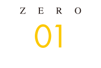
秘訣1 CVから逆算し、「申し込みたい」と思えるLPをつくる
「どんなデザインにするか」の前に、決めたいことがあります。誰に、何を申し込んでもらうのか。そして、その人は何に期待し、何を確かめられれば、一歩を踏み出せるのか。
ZEROは、購入・予約・問い合わせなどの目的と、お客様の判断から逆算してLPを設計します。商材に合った入口を選び、期待に応える根拠を示し、申し込み直前の迷いまで解きほぐす。その考え方が、ページ全体をつなぐ軸になります。
商品の特徴を、お客様が「自分に必要だ」と思える価値へ変える
LPは、Web上で商品の価値を伝える営業マン
LP（ランディングページ）とは、商品購入・予約・問い合わせ・登録など、目的の行動につなげるためのWebページです。この行動を「CV（コンバージョン）」と呼びます。検索広告やSNSの動画・画像広告などから訪れた人へ、商品・サービスの魅力と判断に必要な情報を、縦長の1ページにまとめて伝える形がよく使われます。
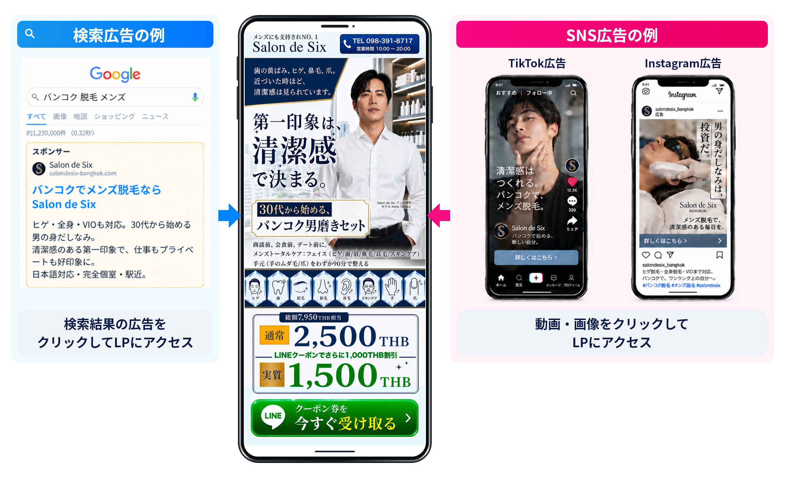
ZEROがLP制作で目指すのは、「一流の営業マンを、Web上に作り上げること」です。営業時間外にも御社の商品がどう役立つかを伝え、購入や相談を検討してもらう。見た目を整えるだけでなく、お客様が納得して選べるように説明する役割を持たせます。
「何ができるか」から、「なぜ、この人に必要か」へ
同じ商品を同じお客様に紹介しても、特徴を並べる説明と、相手の悩みに答える説明では、伝わり方が変わります。LPでも、伝え方や構成はCVR（訪問した人のうち、目的の行動に至った人の割合）を左右する要素です。
その出発点は、商品とお客様を深く理解すること。自社ならではの選ばれる強みは何か。お客様は何に困り、どんな変化を望んでいるのか。本人もまだ言葉にできていない本音や動機まで、調査や対話を通じて探ります。こうした強みを「USP」、顧客の本音や動機への理解を「顧客インサイト」と呼びます。
最初の切り口で興味を引き、続きを読みたくなるきっかけをつくる。そのうえで、「ユーザーが求めている情報」を「分かりやすく伝えやすい順序」で「分かりやすい画像で伝える」。疑問が解け、使うメリットが自分のこととして分かるから、申し込みを検討できるのです。
お客様が最後に何を恐れ、どこで迷うかも大切です。ただ、その不安に答えるだけでは、「申し込みたい」という気持ちまでは生まれません。今の課題をどう解決できるのか、利用後に何が変わるのか、その期待を持てる根拠まで届ける必要があります。
大切なのは、決まった型を埋めることではありません。「この商品の価値は何か」「この人は、何が分からず迷っているのか」。担当者が熱量を持って本気で考え抜き、伝わる形へ変えることです。御社が伝えたい特徴を、お客様が選ぶ理由へ。この理解を、文章・画像・構成へつなげていきます。
購入・問い合わせ・見込み客獲得から、売上につながる入口を選ぶ
その場で買える商品か、相談してから決めたい商品か
あなたの商品は、初めて知った人がその場で買えるものですか。それとも、相談や体験をしてから決めたいものでしょうか。最初に決めるのは、見た目の好みよりも、お客様に何を申し込んでもらうかです。
価格差を考える仮の例として、100円の商品と100万円のサービスでは、必要な説明も検討期間も違います。数千円のサプリメントなら内容や条件に納得して購入できても、数十万円の語学留学なら、資料を読み、相談してから判断したい人もいるでしょう。金額に加え、価値や利用後の姿をどこまで想像できるかで、最初の一歩は変わります。
個人向けの「BtoC」か、法人向けの「BtoB」かも判断材料です。個人向けでは、自分の悩みや好み、暮らしの変化が購入の動機になります。一方、法人向けでは、担当者が納得しても、上長や役員の確認・決裁が必要な場合があります。社内で説明できる資料や、費用対効果の根拠も用意したいところです。
もちろん、個人でも高額商品は慎重に比較しますし、法人でも一人で決められる取引はあります。価格・検討期間・意思決定に関わる人を確かめ、主に次の3つから入口を選びます。
目的に合った3つのLPの型
| LPの型 | 目指す行動と、適した商材の例 | 設計で確かめること |
|---|---|---|
| ①直接購入型 | LPから注文・決済へ進む。コスメ・サプリメント・食品・アパレルなど、価値や使う姿を理解しやすい低〜中価格帯の個人向け商品。 | 商品の価値、価格、購入条件を明確にする。実際に用意できるお試し価格や返金保証を示し、入力項目を整理して、購入途中の負担やカゴ落ちを減らす。 |
| ②問い合わせ型 | 個別見積もり・相談・商談・対面カウンセリングへ進む。法人向けシステム・業務支援、士業、住宅・リフォーム、高価格帯のパーソナルジムなど。 | 導入実績・事例・比較できる情報で、相談する価値を示す。無料の概算見積もりや相談を提供する場合は、その範囲と相談後の流れも明確にする。 |
| ③リード獲得型 | 登録や請求を通じて見込み客の連絡先を得て、接点をつくる。LINE公式アカウント登録・無料セミナー・資料請求・無料会員登録・簡易診断などが入口。美容クリニック・エステ、スクール・習い事、金融・投資相談、転職・キャリア支援など。 | 「まず役立つ情報や特典を受け取りたい」という気持ちに応える。例えば「友だち追加で限定クーポン」「1分でわかる無料肌診断」など、実際に提供できるメリットを示し、登録後も段階的な配信やメルマガで価値を伝え、来店・契約へつなぐ。 |
表の特典や保証、所要時間は設計例です。実際に提供できる内容と条件に合わせて使います。また、リード獲得型は法人向けにも活用でき、予約やセミナーなどの分類が重なる場合もあります。型の名前より、その行動が購入・契約にどうつながるかを考えることが大切です。
7つの制作事例で見る、申し込みの入口の違い
ZEROの制作事例も、入口は一つではありません。それぞれのページが、最後にどんな行動を促しているかに注目してください。
7つの事例を横にスワイプして比較できます。画像を押すと拡大できます。
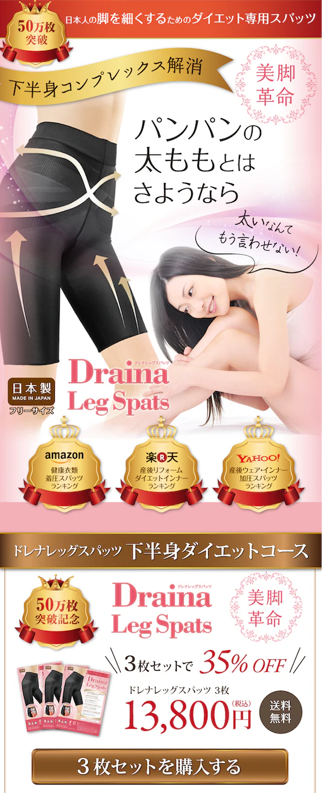
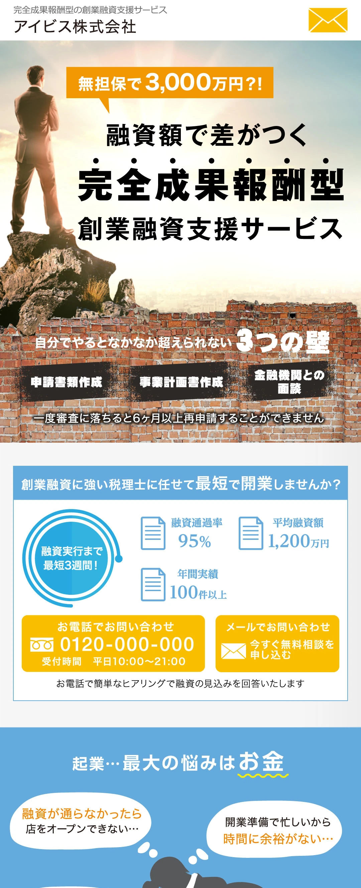
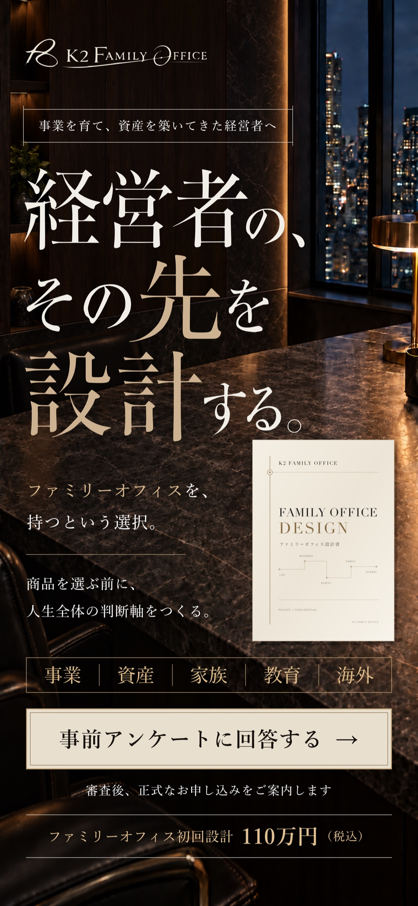
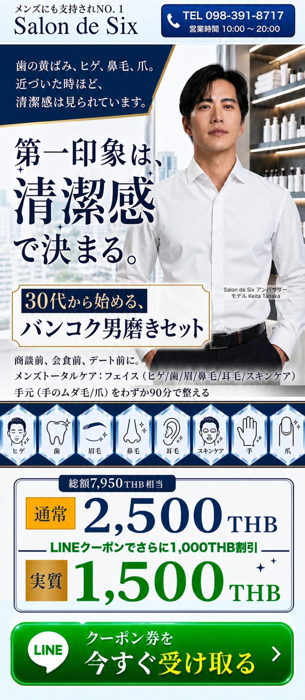
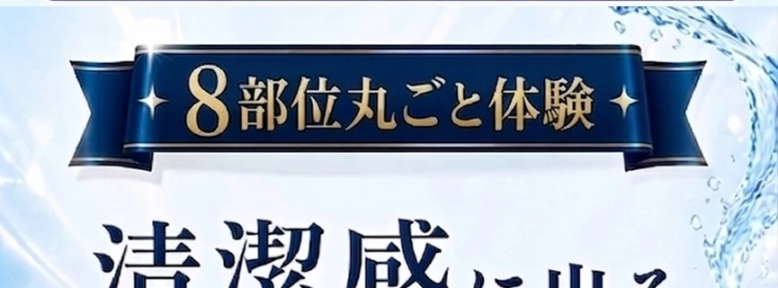
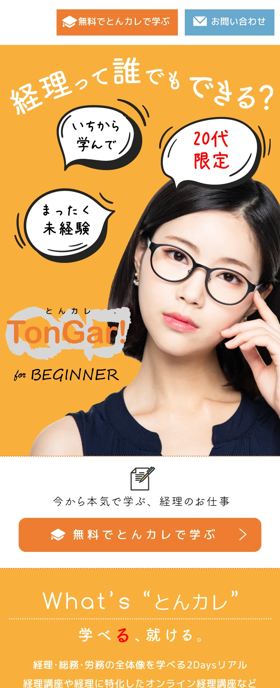
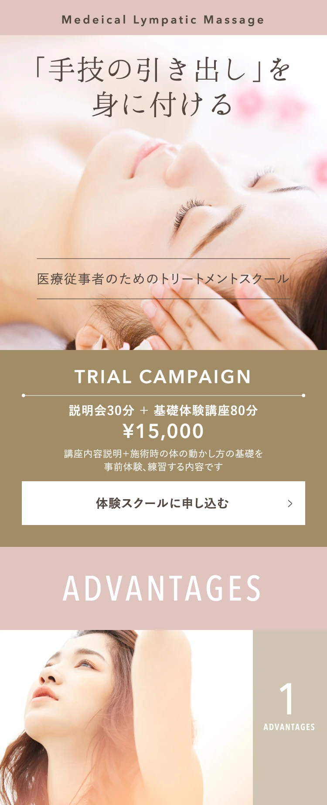
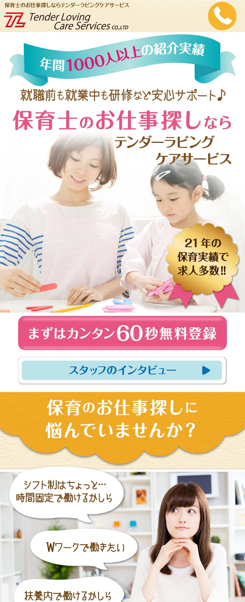
| 制作事例 | お客様の関心から、次の行動へ |
|---|---|
| 商品購入型：ドレナレッグスパッツ | 商品の紹介と価格から、3枚セットの購入へ。 |
| 問い合わせ型：アイビスの創業融資支援 | 起業時のお金の悩みから、無料相談へ。 |
| アンケート調査型：K2ファミリーオフィス | 設計サービスと初回設計料金を伝え、個別相談の前の事前アンケートへ。 |
| リード獲得型：サロンドシックス | メンズ美容のクーポン受け取りから、8部位まるごと体験の検討へ。 |
| セミナー申込型：とんカレ | 未経験者向けの講座説明から、経理セミナーの申し込みへ。 |
| 予約型：みどりスクール | スクールの特長から、体験講座の申し込みへ。 |
| 登録型：テンダーラビングケアサービス | 保育士の仕事探しの悩みから、無料登録へ。掲載事例では「60秒無料登録」と案内。 |
掲載例の価格・特典・条件・所要時間の表示は、制作当時のものです。
100万円を超えるK2ファミリーオフィスの設計サービスでは、まず自分のペースで回答できる事前アンケートを用意しました。個別相談へ進む心理的な負担を抑えながら、お客様の状況や希望を把握し、適切な商談につなげる狙いです。
無料相談・体験予約・資料請求・LINE登録・セミナーなどで接点をつくり、情報提供や個別提案を重ねて購入・契約へ進む方法を「ステップマーケティング」と呼びます。すぐに契約しにくい商品にも、検討を前へ進められる一歩を用意するのです。
入口は、分析と公開後の反応から見直す
ただし、価格だけで型を決めることはできません。顧客との取引全体の価値、お客様の悩みや理解度、競合の売り方、自社の強みを確かめます。その結果、直接購入から相談へ、相談から資料請求へと、入口を見直す場合もあります。
ZEROは、ご希望の型をつくるだけでなく、売上につなげるために何を申し込んでもらうべきかから考えます。公開後は、入口ごとの反応と商談・契約へのつながりで仮説を検証します。ZEROによる継続的な分析・改善は別契約です。
申し込む理由と最後の不安から、LP全体の構成を逆算する
「大丈夫そう」と「これで変われそう」の両方を届ける
入口を決めたら、次は「どんな気持ちになれば、その一歩を踏み出せるか」を考えます。ZEROが起点にするのは、ページ冒頭のキャッチコピーだけでなく、購入・予約・問い合わせの直前にある期待と迷いです。
お客様が知りたいのは、費用や入力の手間だけではありません。「自分の問題を解決できるのか」「なぜ自分に合うのか」「使うことで今の状況がどう変わるのか」。その答えと、そう判断できる根拠が必要です。
課題、解決方法、使い方、利用後の姿、実績や利用者の声、費用・契約条件を整理する。そして、不安や疑問が解け、「自分の課題を解決するために申し込みたい」と思える流れを、LP全体でつくります。
申し込み直前に残りやすい、4つの不安に答える
魅力が伝わっていても、最後の疑問が残れば手は止まります。特に確認したいのが、次の4つです。
| 不安 | お客様の心の中にある疑問 |
|---|---|
| 手間の不安 | 入力にどれくらい時間がかかるのか。面倒な手続きはないか。 |
| 金銭・契約の不安 | 知らないうちに料金が発生しないか。定期購入や契約期間の縛りはないか。 |
| 営業対応の不安 | 問い合わせの後、しつこい営業電話や売り込みが来ないか。 |
| 行動後の不安 | 申し込むと何が届き、誰からどのような連絡が来るのか。 |
ボタン周辺の短い言葉で、行動と得られる価値を明確にする
ボタンの直上・直下などに添える短い説明を「マイクロコピー」と呼びます。1〜2行で、最後に確かめたい条件や、申し込んで得られるものを伝えます。
例えば、実際の手続きに合っていれば「たった1分で入力完了」「会員登録不要」で、手間の見通しを示せます。「完全無料」「営業電話は行いません」なども、提供条件や対応方針と一致する場合に使える表現です。料金・契約の条件や営業の有無を、安心させるためだけに書き換えることはできません。
ボタンの文言も、「送信」だけより「無料で資料を取り寄せる」「今すぐ限定クーポンを受け取る」のほうが、次の行動と得られる価値を理解しやすくなります。無料・限定などの表現は事実に合わせ、受け取り方法や、その後の流れも必要な場所で案内します。
CVは、ボタンを押すことだけではなく、購入・予約・問い合わせなど、定めた行動が完了すること。ボタンから入力画面へ進んだ先も含めて、説明と実際の手続きがつながっているかを確かめます。商品の価値や根拠、詳しい条件は本文で伝え、すべてをボタン周辺の小さな場所へ詰め込みません。
CVからFVへ逆算し、お客様が読む順番に組み直す
まず、してほしい行動を決める。次に、その行動に必要な納得を考え、説明と根拠をそろえる。そのうえで、伝える順序と最初の切り口を考えます。この作業を、構成に落とし込むと次のようになります。
| 設計する順番 | 考えること |
|---|---|
| ①CVエリア | 購入・予約・相談などの行動、得られるもの、その後の流れを明確にする。残る不安に短く答える。 |
| ②決断に必要な納得材料 | 実績の数値・利用者の声・他社との比較など、期待する価値を裏付ける証拠をそろえる。 |
| ③提案・オファー | 自社が提供できる解決策、利用後の姿、選ばれる強み、申し込みの内容・価格・条件を伝える。 |
| ④問題提起・共感 | お客様の課題や願いを言葉にし、「自分のことだ」と感じられる入口をつくる。 |
| ⑤ファーストビュー（FV） | 最初に見える画面で、誰にどんな価値を届けるのかを示し、続きを読みたくなる切り口を決める。 |
これは、つくる側が考える順番です。読む側には、例えば「FV → 課題への共感 → 解決策の提案 → 根拠による納得 → 申し込み」という流れで届けます。商材やお客様の理解度によって順序は調整し、途中で納得した人も行動できる位置に申し込みの案内を置きます。
こうして逆算すると、冒頭で約束した価値、本文で示す解決策と根拠、最後に申し込む内容がつながります。構成を決める際はボタン周辺だけで完結させず、「何を書くか」と「なぜ、ここで伝えるか」をLP全体で考えるのです。
ZEROでは、お客様からいただく情報と、プランに応じた調査を基に、この判断を構成案へ落とし込みます。自社の商品をどう説明すれば伝わるのか。その悩みを、目的・必要な情報・伝える順序まで整理した構成へ変えていきます。調査範囲の違いは、料金プランでご確認いただけます。
では、その申し込みを何件集めれば、売上と利益につながるのでしょうか。次は、顧客との取引全体と目標の数字から、必要な件数・広告費を考えます。
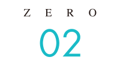
秘訣2 CVの先にある成約率・LTV・広告の採算まで設計する
問い合わせは増えた。でも契約につながらない。売上は伸びたのに、利益や手元の資金が増えない。それでは、LPを作った目的を果たせません。
契約・継続利用・入金まで見て、使える広告費と必要な件数を逆算する。秘訣1の導線に数字の根拠を持たせ、実行できる計画にします。ここでは、ページ上で決済が完結しない「問い合わせ型」を中心に、通販などの「直接購入型」との違いも説明します。
初回売上だけで判断しない。LTVから、広告に使える金額を決める
「8,000円の体験に、広告費8,000円。それでは利益が残らない」。脱毛サロンから、実際にこのようなご相談をいただきました。問い合わせ単価は4,000円でも、来店するのは半分。来店1人あたりの広告費は8,000円となり、施術や問い合わせ対応の費用もかかります。
ZEROは「その後のコース契約まで含めて計算しましょう」と提案しました。予約に空きがあり、受け入れる余力があったからです。空き枠にも家賃や固定給はかかります。広告を止めて接点を減らす前に、追加の売上と費用を比べ、固定費に回せる分が増えるかを確かめます。
体験から本コースへ進む「アップセル」、希望に合うホワイトニング・ネイル・マッサージなどを提案する「クロスセル」。接客や施術に満足して通い続けていただければ、取引全体の売上は変わります。その後も選ばれる価値と、追加の提供費用をセットで考えることが大切です。
制作前に、利益と広告費をつなぐ5つの指標をそろえる
LTV（顧客生涯価値）は、1人のお客様との継続・追加取引を含む価値です。制作前に次の数字を整理し、計算に含める取引・期間をそろえます。
| 指標 | 意味と、判断に使う方法 |
|---|---|
| ① 限界利益 | 売上から、販売・提供に伴って増える原価や変動費を引いた額。本章では広告費を別に検討するため、広告費を引く前で計算します。固定費・広告費を払う原資で、最終利益や現金残高とは異なります。 |
| ② LTV | 売上を積み上げる「売上ベース」と、原価・変動費を引く「限界利益ベース」を区別します。同じ取引が続くなら、1回の限界利益×購入回数、定額契約なら月間限界利益×継続月数で概算。金額や継続確率が違う場合は取引ごとに積み上げます。 |
| ③ 成約率 | 問い合わせのうち契約に至る割合。来店・商談を挟む場合は、その割合も確認します。全問い合わせを分母とするCPAには、全問い合わせ基準の成約率を対応させます。 |
| ④ 許容CPA | 問い合わせ1件の獲得に使える広告費の上限。問い合わせ1件の見込み限界利益から、未控除の対応費、固定費に回す分、残したい利益を確保して決めます。 |
| ⑤ 許容CPC | 広告1クリックに使える金額の目安。「許容CPA×クリックから問い合わせへの割合」で求めます。前提に基づく管理目標であり、黒字の保証ではありません。 |
CPAは広告費÷成果件数、CPCは広告1クリックの費用です。本章のCPAは全問い合わせ数を分母とし、来店・契約1件の獲得単価と区別します。有効問い合わせの成約率を使うなら、全体から有効問い合わせになる割合も掛けるか、CPAの分母も有効問い合わせにそろえます。
直接購入型では、問い合わせから成約への段階を挟まず、購入1件の獲得単価と購入者のLTVを対応させます。
100人の初回来店から、契約・再契約までを積み上げる
ここからは相談を基に、料金・契約率を設定した説明用の仮例です。初回体験8,000円、12回コース12万円とし、初回来店100人の30％が契約、契約者の30％が1回再契約したとします。
| 取引 | 計算 | 売上 |
|---|---|---|
| 初回体験 | 8,000円×100人 | 80万円 |
| コース契約 | 12万円×30人 | 360万円 |
| 再契約 | 12万円×9人 | 108万円 |
| 合計 | 初回来店100人分 | 548万円 |
548万円÷100人＝1人あたり54,800円の売上ベースLTV。体験だけの方も含む平均です。初回体験はコース12回とは別、再契約は1回までで、別サービスや上位プランは含めません。将来の取引を含むため、当月の売上でもありません。
通販のリピート・定期購入、スクールの継続受講、法人契約の更新・追加発注にも、同じ考え方を使えます。
見込み売上から、使える広告費を考える
問い合わせの50％が初回来店するなら、54,800円×50％＝問い合わせ1件あたり27,400円の見込み売上です。来店しなかった方も含む平均で、利益ではありません。LTVには契約率・再契約率を織り込み済みなので、コース契約率30％を再び掛けません。
CPA4,000円を引いた23,400円も、そのまま利益にはなりません。体験・コース・再契約の提供費と問い合わせ対応費、家賃・固定給に回す分、残したい利益を確保して、許容CPAを決めます。限界利益ベースのLTVを使う場合は、控除済みの原価・変動費を二重に引かないようにします。
契約した人だけに売上が生まれる商材なら「契約者1人の限界利益ベースLTV×問い合わせからの成約率」が出発点です。今回のサロンは契約前の体験売上もあるため、売上が生まれる各段階を含めて計算します。
1クリックの見込み売上と、使える金額を分ける
- 1クリックの見込み売上＝問い合わせ1件の見込み売上×クリックから問い合わせへの割合
- 許容CPC＝許容CPA×クリックから問い合わせへの割合
費用と残す利益を織り込み、別の仮定として許容CPAを4,000円に設定できたとします。クリックから問い合わせへの割合が2％なら、4,000円×2％＝許容CPC80円です。相談時の実績CPAを、そのまま上限にした計算ではありません。
見込み売上は27,400円×2％＝1クリック548円ですが、実際のCPCと比較するのは、費用と利益を織り込んだ80円です。
狙うキーワードの想定CPCが上限を超えるなら、今の前提では目標採算に届きにくいと考えます。商品単価・提供費用、アップセル・継続利用によるLTV、LPの問い合わせ率、広告の対象・訴求を見直し、実際の配信結果で確かめます。平均CPCだけで赤字が確定するわけではありません。
自社の率・費用を使い、分からない数字は仮定と実績を分けます。予測を当て切ることより、何を変えれば採算が改善するかを判断できる土台を作りましょう。
売上目標から必要な件数・広告予算を逆算し、回収時期まで確かめる
契約目標から、来店・商談・問い合わせ・アクセスへ戻る
KPIは、目標への進み具合を確かめる数字です。同じサロンで、12万円の本コースを月15件、新規契約額180万円を目指す仮例で考えます。以下の率も仮定であり、前節の100人のLTVとは集計対象が異なります。
| 逆算する項目 | 計算 | 必要件数・金額 |
|---|---|---|
| 本コース契約 | 12万円×15件 | 契約額180万円 |
| 初回来店 | 15件÷契約率30％ | 50人 |
| 問い合わせ | 50人÷来店率50％ | 100件 |
| LP訪問 | 100件÷問い合わせ率2％ | 5,000人 |
| 広告予算 | 100件×目標CPA4,000円 | 40万円 |
行動につながる割合をCVRと呼びます。表の2％はLP訪問が分母で、前節の広告クリックが分母の割合とは別です。広告から訪問を得る場合は、計測方法と流入元をそろえ、必要クリック数を求めます。
説明用にクリック数＝LP訪問数と置けば、5,000回×目標CPC80円＝40万円となり、CPAからの予算と一致します。法人サービスでは、来店を商談に置き換えます。
利益・資金・対応余力を確かめ、実行できる計画にする
広告の配信量を広げるとCPAが上がる場合もあるため、件数と単価を一緒に確認します。契約額180万円や、初回体験50人分の売上40万円も、そのまま利益にはなりません。
固定費の仮例が家賃20万円・脱毛機レンタル4万円・光熱費2万円なら、月額は26万円＋固定給などの月間総額です。光熱費は一定と仮定し、使用状況で見直します。予約のない時間も含む固定給を、施術費でも二重計上しないようにします。
体験・契約後12回の施術と対応、消耗品、決済手数料、広告費も確認し、既存顧客分を含む同じ期間の売上と費用で店舗全体の利益を考えます。契約額と当月の売上・利益は別です。15契約で目標利益に届かなければ、件数・料金・費用・CPAを見直します。
新規50人と問い合わせ100件に加え、既存客・契約後の施術に対応できるかも確認します。増員・機械追加が必要なら費用に反映。集客の計画と、約束したサービスを提供できる計画をそろえます。
LTVが高くても、入金まで待てる資金が必要
問い合わせだけでは売上も入金も生まれません。広告費の支払いが先行し、その後に商談・契約・納品・入金が続く場合、LTVが十分でも次の広告や施策に回す資金が不足しかねません。許容CPAとともに、広告費をいつまでに回収し、その間の支払いをどうまかなうかを確かめます。LP制作費なども回収対象なら、広告費だけの回収とは分けて計画します。
直接購入型には、初回購入の限界利益で広告費を回収するモデルと、リピート・定期購入の累計限界利益で回収するモデルがあります。初回で回収できれば再投資しやすくなりますが、購入代金すべてを広告費に使えるわけではありません。購入時の決済と実際の入金、仕入代金などの支払い時期も確認します。
継続購入型は継続率と費用から回収時期を見込みます。「3〜6か月以内」は自社条件から置く仮の目標例で、共通の基準や安全圏ではありません。累計限界利益で広告費をまかなうこと、現金回収、事業全体の黒字化は、別々に確認します。
- 広告費・制作費などを支払う
- 初回の購入・来店で入金
- 契約・継続利用で入金
- 支払いと入金の時期を照らし合わせる
実際の時期・金額は商材と契約条件によって異なります。
オファーと問い合わせ後の導線を、回収計画につなげる
何を申し込んでもらうかという「オファー」も、成約までの時間に関わります。設計例として、情報収集を始めた方には資料請求、課題が具体的な方には個別診断や初期導入パッケージなど、検討段階に合う入口を考えます。課題や条件が整理されれば、初回商談から契約内容や初期費用を具体的に話しやすくなります。
フォームで受け取った情報を適切な案内・商談につなぐことも、受注・入金までを短くする工夫です。ただし、LPだけで商談・納品期間は変えられません。受付後の連絡・提案・契約・サービス提供・支払い条件まで、実際の運営と合わせます。
目標と実績を比べ、改善する段階を見つける
- 問い合わせが少ない：LP訪問数と、問い合わせにつながる割合を確認。
- 問い合わせから来店・商談にならない：問い合わせ後の案内と、予約の取りやすさを確認。
- 来店・商談から契約にならない：お客様との相性と、提案内容を確認。
- 契約はあるが資金が回らない：入金・支払い時期と、回収までの資金を確認。
ZEROが支援・相談で接した成長企業にも、LTV・KPIを投資判断に使う共通点がありました。同じ成果を保証するものではなく、自社の目標と実績から仮定を更新することが大切です。
制作段階のLTV・KPI設計は、ZERO式LP制作プランに含みます。数字を整理し、構成や訴求の根拠を作るところからご相談ください。公開後の継続分析・数値更新・改善は別契約です。
条件を伝え、商談・契約につながるお客様が相談しやすい入口を作る
安い問い合わせが、安い顧客獲得になるとは限らない
「誰でもお気軽に」「無料相談」、購入型なら「初回99円・条件なし」という訴求の仮例を考えてみましょう。申し込みやすくなる一方、予算や求める内容が合わない方、初回だけを希望する方も含まれます。客単価が想定より低ければ回収計画も変わります。無料相談や低価格の体験自体ではなく、その先の契約・継続まで確かめる必要があります。
問い合わせCPAが下がっても、成約率が下がれば、契約1件を得る広告費は上がり得ます。問い合わせ型では営業・対応の時間、購入型では提供費用を含む回収が問題になります。CPC・問い合わせCPA・最終顧客獲得単価を分けて判断します。
自社が力になれるお客様が、条件を理解して相談できる入口を作る。そのために適合条件を確認するのが「スクリーニング」です。単に件数を減らしたり、情報収集中の方を一律に断ったりするのではなく、不安や行き違い、双方の対応負担を減らします。
① 誰の、どの課題に対応するサービスかを明示する
対象業種・事業規模・解決できる課題・利用条件を示します。「年商○億円以上の企業向け」「月間○件以上の問い合わせ獲得を目指す事業者向け」は、実際にその条件が必要な場合の設計例です。根拠なく狭めず、価値を提供できる範囲から決めます。
「自社のためのサービスだ」と伝われば、具体的な相談を始めやすくなります。直接購入型でも、誰に向き、どのような利用を想定する商品かを伝える考え方は共通です。
② 価格帯と対応条件を伝え、提案の話から始める
料金・最低発注金額・導入費用の目安、含む内容・別途費用の条件を、判断に必要な場所へ示します。「最低受注金額○○万円〜」「導入費用○○万〜○○万円」も、実際の提供条件に基づく表示にします。
問い合わせ後に予算の不一致が分かる行き違いを減らし、課題をどう解決できるかという提案へ進みやすくします。価格の提示だけで、相見積もりや価格交渉がなくなるわけではありません。
③ フォームでは、最初の提案に必要な情報を受け取る
困り事・希望内容・検討時期・予算規模を確認し、案内や対応の順序を考えます。選択式や必要項目の必須化も方法の一つですが、聞きすぎれば相談したい方まで離脱します。
最初に聞くことと、打ち合わせで確かめることを分け、商材と検討段階に合う負担にします。秘訣1のK2の事前アンケートも、この考え方を使った入口です。
件数だけでなく、商談・契約と対応時間で評価する
条件を明確にしてCVRや件数が下がっても、それだけで成功・失敗とは判断できません。商談・来店率、契約数、継続率、契約1件の獲得費用、対応時間、利益、回収時期を合わせて確認します。営業工数あたりの売上や、投じた費用に対して得た利益を見るROIも判断材料です。
ZEROは、集客の目的と、その後の提案まで考えてLPを構成します。受付方法の詳細は秘訣7へ。フォームの新規制作・連携の対応範囲は、料金プラン・オプションでご確認ください。
数字から必要な成果が見えたら、次は「なぜ、自社を選んでもらえるのか」です。顧客・競合・自社を調べ、申し込む理由を具体化します。
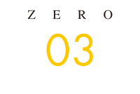
秘訣3 顧客・競合・自社を掘り下げ、「選ばれる理由」を見つける3C分析
秘訣2で決めた売上・利益の目標。その実現に向けて、今度は「なぜ、お客様は他社ではなく自社を選ぶのか」を具体的にしていきます。
そのために行うのが、顧客（Customer）・競合（Competitor）・自社（Company）を調べる「3C分析」です。お客様が求めていること、比較している選択肢、自社が実際に届けられる価値。この3つを照らし合わせ、LPで一番伝えるべきことを決めます。
商品をよく知るだけでは、買う理由は見えてきません。お客様の気持ちと比較する条件まで知って、初めて伝えるべき強みが見えてきます。 ZEROは調査の結果を、構成・文章・見せ方を考えるための共通資料にまとめます。答えや根拠が足りなければ調査へ戻り、思い込みのまま制作を進めないことを大切にしています。
以下では、ZERO式LP制作プランの詳細調査を中心に、3C分析をLPへ反映する考え方をご紹介します。プランごとの調査と提出資料の違いは、章末の表で確認できます。
顧客分析。検索意図と行動心理から、欲しい理由と申し込めない理由を知る
「商品の良さを伝えているのに、なぜ申し込まれないのでしょうか」。ホワイトニング商品を販売するクライアントから、このような相談をいただきました。
成分や価格を説明していても、お客様は「自分に合うのか」「使い続けられるか」で迷っているかもしれません。「30代女性・主婦」と年齢や性別、職業を決めるだけでは、その迷いまでは分かりません。同じ属性でも、悩みのきっかけや、お金を払って解決したい理由は違うからです。
欲しい理由と、申し込めない理由。その両方が、LPで答えるべきことです。
検索キーワードの奥にある、悩みの背景と望む未来を調べる
検索窓に入力された言葉は、お客様自身が言葉にできる要望です。その奥に、まだ十分に言葉にされていない願いや恐れがあることもあります。こうした背景を理解する手がかりを「顧客インサイト」と呼びます。
例えば、次のような関係です。いずれも考え方を説明するための仮例であり、検索した人全員の本音を示すものではありません。
| 表に出ている要望 | 背景にあるかもしれない願い・不安 |
|---|---|
| 歯を白くしたい | 写真に写った歯の色が気になり、口元を気にせず笑いたい。 |
| 業務効率化ツールを導入したい | 入力ミスのたびに部下へ注意するストレスから解放されたい。 |
| 費用が安いリフォーム会社を探したい | 安さだけで選んで家族を後悔させたくない。失敗の責任を負いたくない。 |
ZEROは商品資料、過去の問い合わせ、既存顧客の声を確認し、関連する検索キーワードを整理します。「比較」「失敗」「デメリット」「相場」といった組み合わせまで見ると、何を比べ、何を警戒しているのかを考える手がかりになります。
さらに、商材に合う口コミ、Q&Aサイトの相談、SNSの投稿を確認。法人向けでは商談記録、失注理由、断り文句、営業担当者の話も合わせ、購入直前に迷ったことや最後の決め手を探ります。通販・店舗・スクールでも法人サービスでも、知りたいことは「どんな状況で困り、何を解決したいか」。商材によって調べる場所を変えます。
属性データやアンケートも手がかりになりますが、それだけで本音を決めつけません。悩みが生まれたきっかけ、そのときの気持ち、実現したい状態を、実際の言葉と行動に戻って確かめます。
- きっかけ：写真で歯の色が気になった
- 願いの仮説：口元を気にせず笑いたい
- 関連キーワードで検索
- LPで方法や条件を確かめる
説明用の仮例。気持ちは検索語だけで断定せず、顧客の声から確かめます。
顧客が話した事実と、こちらの仮説を分けて残す
集めた声は原文と出典を残し、きっかけ・願い・不安に整理します。例えば、次のように「声」「読み取った仮説」「LPで答えること」を分けます。
| 区分 | 整理例（すべて説明用の仮例） |
|---|---|
| 顧客の声 | 毎日手間がかかるものは、続けられるか不安。 |
| こちらの仮説 | 必要な時間や手順が分からず、生活に取り入れられるか迷っているのかもしれない。 |
| LPで答えること | 使い方・所要時間・使用頻度を具体的に示す。 |
一つの投稿だけで、すべてのお客様が同じ気持ちだとは判断しません。問い合わせや複数の声、商品情報と照合し、どこまで確認できたかも残します。お客様が実際に言ったことと、私たちの解釈を分けるからこそ、伝える言葉に根拠が生まれます。
悩みと検討状況を整理してから、中心ターゲットを決める
調べた声を悩みや検討状況ごとにまとめ、商品の価値が特に役立つ人を中心ターゲットにします。その代表的な人物像が「ペルソナ」です。
例えば、「20〜30代の女性」だけではなく、「写真の歯の色が気になり、自宅でケアしたい。ただ、無理なく続けられるかを確認してから買いたい」。これは説明用の人物像ですが、購入理由と迷いが入ることで、LPに必要な説明が見えてきます。
中心を定めても、同じ悩みを持つ別の年齢・職業の人に共感が広がる可能性はあります。周辺の疑問は事例やFAQで補い、判断条件が大きく異なる人は別の人物像に整理します。法人向けなら、実際に使う担当者の負担だけでなく、決裁者が判断する費用や導入条件も確認します。
- 顧客の声から悩み・購入理由・迷いを整理
- 中心ターゲットを選ぶ
- 属性・生活・検討状況を人物像にまとめる
- 疑問・期待・必要な根拠をLPへ反映
申し込みまでの気持ちをたどり、説明の順序を決める
課題に気づいてから申し込むまでの行動・思考・感情を整理するのが「カスタマージャーニー」です。「必要性を感じる→検索や広告に触れる→LPを見る→比較・検討する→申し込む」という流れの中で、どんな疑問が生まれるかを考えます。
調べ始めなら「どんな解決方法があるか」。比較中なら「自分に合うか、他と何が違うか」。購入前なら「続けられるか、費用や条件はどうか」。同じ商品でも、その人がいる段階によって、必要な言葉と根拠は変わります。
検索広告から具体的な答えを探して来た人と、SNSで初めて興味を持った人でも、理解度や期待は違います。課題に気づいたばかりの人へ購入を急がせたり、比較中の人へ初歩的な説明だけを長く続けたりすると、知りたいことに答えられません。
ZEROは比較や再訪、法人なら社内相談も含め、どの段階で何を説明するかを整理します。人物像に根拠があるか、ためらう疑問に答えているかを確かめ、ページの構成と文章へ反映します。お客様の理解が進む順序に合わせることが、納得して申し込めるLPの骨格になります。
- 課題の自覚：どんな問題があるか
- 商品との接触：どう解決できるか
- LPの閲覧：自分に合うか
- 比較・再訪：なぜこれを選ぶか
- 購入・申し込み：条件と次の流れを確認
順番は一直線とは限りません。流入経路や比較・再訪も踏まえて説明を組みます。
競合分析。訴求・条件・口コミを比べ、お客様が選ぶ決め手を探る
お客様が「続けやすさ」を求めているとします。使用時間は短くても、毎回の準備や片付けが面倒なら、どうでしょうか。企業が強調する魅力と、利用者が評価する価値は同じとは限りません。
競合分析では、お客様が比較する商品・サービスを特定し、強み・条件・集客の方法と、利用者が感じている不満や不安を調べます。検索やSNS広告で自社を知った後、検索上位の企業や知名度のある企業と比較する人もいます。競合の表現をまねるためではなく、その比較の中で自社が選ばれる条件を考えるための調査です。
お客様と同じ検索から、比較される企業を見つける
顧客分析で整理したキーワードを使い、検索結果や検索広告から比較候補を探します。自宅用ホワイトニングなら「自宅 ホワイトニング」などです。まず3〜5社程度を社内の目安とし、なぜ比較対象にしたのかを記録して、必要に応じて追加します。
検索上位のLP、繰り返し広告を見かける企業、出稿の多さを確認できる情報などは、調査先を選ぶ手がかりになります。ただし、広告の表示回数や掲載の継続だけで、売上や採算がよいと判断することはできません。確認できた集客方法と、成果が分からない部分を分けて扱います。
同じ種類の商品と、同じ悩みを解決する別の方法は分けて比較します。容量や利用期間などの条件もそろえ、「安い」「手軽」といった言葉の印象だけで優劣をつけません。
- 顧客の検索キーワードを確認
- 検索結果や広告から候補LPを探す
- 選定理由・対象・比較条件をそろえる
- 訴求と提供条件を調べる
広告が続いていることだけでは、成果が出ている証拠にはなりません。
4つの視点で、競合の説明と購入条件を確かめる
公式サイトやLPでは、最初に強調している魅力と、実際に提供している内容・条件を分けて確認します。
| 調べる視点 | 確認する内容 |
|---|---|
| ① 訴求軸・ターゲット | 誰のどんな悩みに、何を約束しているか。価格、スピード、安心・実績、手軽さなど、中心に置いている価値。 |
| ② 提供オファー・申し込み先 | 最初の行動として何を提示しているか。見積もり、無料診断、資料請求、サンプル提供、返金保証などの内容と適用条件。 |
| ③ 信頼性の裏付け | 導入実績社数、業界シェア、専門家の監修、ビフォーアフターなど。数値や事例に対象・期間・条件が示されているか。 |
| ④ 不安が残る説明 | 追加費用が分かるか、大企業向けに見えて相談しにくくないか、購入後のサポートが明確か。知りたいのに見つけにくい情報。 |
さらに、使い方の手順・頻度、準備や片付けまで含めた手間、初回と継続の費用、購入回数、解約・返品条件をそろえて確認します。法人サービスなら、機能・価格に加えて導入や日々の運用の負担、支援の範囲も重要です。
各社に共通する説明が分かれば、お客様が当然確認する条件が見えてきます。一方、説明が見つからない情報は、自社のLPで丁寧に答える候補になります。ただし、LPに書かれていないことは「提供していない」と決めつけず、「公開情報では不明」として残します。
良い・悪い・中間の口コミから、期待と現実の違いを読む
良い口コミでは、期待に応えた点や続けたい理由を。悪い口コミでは、期待と違った点、負担や使いにくさを読みます。中間の評価にも、満足と不満が分かれる条件が表れることがあります。
例えば、「準備が少なく、いつもの習慣に取り入れやすかった」「使う時間は短いが、準備や片付けが面倒だった」という声があったとします。どちらも説明用の仮例で、実際の口コミではありません。この二つからは、「短時間」だけでなく「使う前後も含めて手間が少ないこと」が大切なのではないか、という仮説が生まれます。
それなら、LPで「短時間で簡単」と強めるだけでなく、準備から使用後までの手順を見せる方法が考えられます。本当にその使いやすさがあるかを自社の商品資料や実物で確認し、お客様が「自分の生活でも使えそう」と判断できる説明へ変えていきます。
- 仮の声：準備が少なくて助かった／片付けが面倒だった
- 仮説：使用前後の手間が判断に影響する
- 自社の使い方・手順・裏付けを確認
- 確認できた手順をLPで説明する
説明用の仮例。未確認の点は、追加調査へ戻します。
調査結果を、コピーやFAQに使える資料として引き継ぐ
口コミを詳しく調べる場合は、良い・悪いを合わせて100件以上を社内の目安とし、複数の商品・媒体と中間評価も確認します。重複投稿を除き、似た声はまとめても、異なる意見や少数の重要な不満を消しません。都合のよい声だけを集めないためです。
原文、対象商品、出典URL、投稿日・確認日、評価理由、こちらの仮説、LPへのヒントを記録し、比較表・口コミ一覧・調査の結論・反映案にまとめます。すぐに使わない情報も、後のコピーやFAQの材料として残します。
件数を埋めることが目的ではありません。口コミが少ない商材では無関係な投稿を集めず、問い合わせ・商談・失注理由で補います。対象・媒体・件数はプランと商材に応じて事前に合意します。
自社分析。強みと裏付けを整理し、自社を選ぶ理由をLPの方針にする
「高品質」「使いやすい」「丁寧なサポート」。自社の強みをこう説明していても、お客様には違いが伝わっていないかもしれません。反対に、社内では当たり前の対応が、お客様にとって大きな安心になっていることもあります。
自社分析では、顧客の願いと競合の説明を踏まえ、自社が提供できる価値と、その裏付けを整理します。競合が何を打ち出しているかを確認してから、自社が応えられる価値を選ぶ。ここまで調べて初めて、LPの中心に据える理由を説明できます。
マインドマップで、特徴・価値・裏付けをつなぐ
商品資料・仕様書・料金・使い方・サポート・実績を確認し、開発時の工夫、現場で大切にしている対応、営業で聞かれる質問、購入の決め手も伺います。「何があるか」という特徴から、「誰にとって何がよいか」という価値へ、さらに「何を示せば確かめられるか」という裏付けまで整理します。
ZERO式LP制作プランでは、情報を枝状につなぐ「マインドマップ」を使います。商品情報、顧客の願い、競合の比較条件を関連づけることで、埋もれていた強みや、説明するにはまだ足りない根拠を見つけやすくします。
メガキュアのような自宅用ホワイトニング商品なら、資料や実物で準備・片付けが少ないと確認できた場合、「生活へ取り入れやすい」という価値の候補になります。工程は実物で、使う人の感じ方は利用者の声でも確かめます。これは価値の整理方法を示した条件付きの例であり、商品の効果や継続率を示す実績ではありません。
法人向けなら、初期設定の支援が「担当者が一人で抱え込まずに済む」という価値につながる場合があります。支援範囲と手順まで示せば、何を任せられるのかが伝わります。特徴を並べる一歩先へ進み、誰のどんな負担を減らせるのかまで掘り下げます。
- 商品・使い方・購入条件を整理
- 顧客の願いと競合の比較条件を照合
- 特徴から顧客価値の候補を考える
- 根拠・参照資料・未確認事項を分ける
3つの基準で、LPの中心に置く「訴求軸」を選ぶ
特徴を全部同じ強さで並べると、一番伝えたい魅力がぼやけます。そこで、マインドマップなどに整理した情報を照らし合わせ、LPの中心に据える価値である「訴求軸」を選びます。
| 判断する基準 | 確かめること |
|---|---|
| 顧客にとって重要か | 願い・不安・比較条件に合い、選ぶ理由になる価値か。 |
| 競合はどう伝えているか | 同じ価値を何で裏付け、どこまで説明しているか。まだ疑問が残る点はあるか。 |
| 自社が実際に提供できるか | 商品・体制・手順・実績などで裏付けを示せるか。 |
例えば、「歯の色をケアしたいが、続けられるか不安」という人に自社の手順が応えられるなら、「準備から片付けまで含めた手軽さ」は候補になります。これも、裏付けを確認できた場合の仮案です。ケア内容・注意点・費用・購入条件など、購入判断に欠かせない情報と組み合わせて伝えます。
選ぶ理由は、他社と違うことだけではありません。お客様にとって重要で、自社が根拠を持って伝えられることが出発点です。
大手と同じ指標だけで比べず、お客様に必要な選び方を示す
大手が実績数や価格を強く打ち出しているとき、同じ指標だけで競うと、自社の価値が伝わりにくい場合があります。そこで考えるのが、お客様が重視する比較の基準を見直す「評価軸の再定義」です。大きく3つの方法があります。
一つ目は、競合の強みが、どんな人には合いにくいかを調べること。次の表は考え方を示す仮例です。全国対応・低価格・多機能だから必ず問題があるという意味ではなく、実際の顧客の声と提供内容を確認したうえで検討します。
| 競合が打ち出す強みの例 | 顧客が不安を感じる可能性の例 | 自社が提供できる場合の伝え方 |
|---|---|---|
| 全国対応・対応の標準化 | 担当者が変わる、窓口をたらい回しにされる、個別の事情に対応してもらえないのでは。 | 地域密着、顔の見える担当者、柔軟な対応。即日訪問が可能なら、対応地域・時間などの条件も示す。 |
| 低価格 | サポートが手薄ではないか、後から追加費用がかからないか。 | 専任の伴走支援と料金に含む範囲を示し、支払う費用と受けられる対応を判断できるようにする。 |
| 多機能 | 複雑で使いこなせない、設定の途中で挫折しないか。 | 現場で必要な操作に絞ったシンプルな設計や、導入時の支援を具体的に見せる。 |
どれも言い換えだけでは成立しません。「なぜ自社ならできるのか」を、担当体制、対応範囲、実際の画面や手順、確認できる実績とセットで示します。
二つ目は、得意な対象を絞ること。全業種対応の企業に対し、「特定の業界向け」「特定の年商規模の企業向け」と、経験や提供内容が合う範囲を明確にします。その分野で「自社のようなケースに詳しそう」と最初に思い浮かべてもらうことを目指します。領域を絞るだけで「1位」とは言えず、順位を表示するには別途根拠が必要です。
三つ目は、比較表で選び方の基準を伝えること。自社にだけ丸をつけるのではなく、価格に何が含まれるか、導入後にどこまで相談できるかなど、後悔を防ぐ判断材料を同じ条件で比べます。お客様が「自分にはここが大切だった」と気づき、納得して選べる説明にします。
訴求軸をコンセプトにまとめ、ビッグアイデアへつなげる
「手軽さ」を伝えるといっても、価格の手軽さなのか、使用時間の短さなのか、準備や片付けの負担が少ないことなのかで、LPは変わります。「誰に、どんな価値を、どのような商品・サービスとして伝えるか」をそろえる方針が「コンセプト」です。
訴求軸で中心の価値を選び、コンセプトでLP全体の方針にします。例えば、裏付けが確認できた商品なら、「毎日の生活へ無理なく取り入れたい人に、準備から片付けまで具体的に分かる自宅用ケアとして伝える」という方針が考えられます。
コンセプトは完成したキャッチコピーではありません。構成で何を優先し、文章で何を説明し、画像で何を見せるかを決める基準です。その方針を、思わず「自分に必要かもしれない」と感じる切り口へ発展させるのが、次の秘訣で説明する「ビッグアイデア」です。
- マインドマップで整理
- 顧客に重要か／競合はどう伝えるか／自社が提供でき裏付けがあるか
- 中心となる訴求軸を選ぶ
- 誰に・どんな価値を・どう伝えるかをコンセプトにまとめる
- 興味を引く切り口＝ビッグアイデアへ
調査の理由まで共有し、制作チーム全体で同じ方針を使う
ZEROは、集めた情報、特徴・価値・裏付けの参照資料、未確認事項、訴求軸とコンセプトを選んだ理由まで残し、制作メンバーへ共有します。比較表や口コミ一覧、マインドマップ、戦略資料を、その後の構成・コピー・デザインで使える形につなげます。
別の担当者が読んでも、誰に何を伝え、何を確かめる必要があるかが分かる状態にする。不足があれば顧客の声・競合情報・商品資料へ戻る。調べて終わらず、伝え方の判断までチームで共有することに、ZEROが調査へ時間をかける意味があります。
調査の深さと資料の範囲は、制作プランによって異なります。
| 制作プラン | 調査・分析の主な対応範囲 |
|---|---|
| デザイン・コーディング | お客様からご提供いただく情報・方針を基に制作します。独自調査は行いません。 |
| マーケティング | 競合の公開LP・ホームページを確認し、中心ペルソナ・検討心理・カスタマージャーニー、自社の特徴・強み・裏付けを整理。自社・競合の要点メモと、中心ペルソナ・カスタマージャーニー・訴求軸・コンセプト・ビッグアイデアを、一つのLP戦略設計資料にまとめます。口コミ・Q&A・SNS等の詳細調査、詳細な調査報告書、マインドマップは含みません。 |
| ZERO式LP制作 | 事前に合意した対象・媒体・範囲で、商材に合う口コミ・Q&A・SNS等も確認。顧客・競合と照合して自社の価値・訴求軸・コンセプトを整理し、作成したマインドマップと調査・分析・戦略資料を提出します。 |
どこまで自社で情報を用意し、どこからZEROに任せるか。料金プラン・対応範囲と照らし合わせて、自社に合う進め方をご相談ください。
選ばれる理由が見つかったら、次は「どう伝えれば、興味を持って読み進めてもらえるか」。秘訣4では、ビッグアイデアとストーリーによって、調査で見つけた価値をお客様に届く表現へ変えていきます。
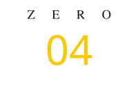
秘訣4 興味を引き、疑問に答え、納得へ導くストーリー設計
調べて分かった商品の強みを、どう伝えれば「もっと知りたい」に変えられるでしょうか。最初の切り口で興味を引き、その先で「自分に合う？」「本当に？」「どう使う？」に答えていく。点在する情報を、申し込みへつながる一つのストーリーにまとめます。
3C分析で見つけた価値を、心に刺さる「ビッグアイデア」へ
「高品質です」「地域密着です」「安心の技術です」。大切な強みでも、その言葉だけでは、他の商品との違いや、自分にとっての価値が見えにくいものです。
そこで、顧客の願い、競合が十分に応えられていないこと、自社が届けられる強みを結び付けます。「今までと何が違うのか」「なぜ、自分に必要なのか」が伝わる切り口。それが、LPの中心になるビッグアイデアです。 意外な見方や新しい気づきも入口になりますが、興味の先には、商品の実際の価値が必要です。
歯のホワイトニング商品「メガキュア」の参考LPをもとに、調査から伝え方を考えてみましょう。以下の顧客心理・口コミ・コンセプト案は、考え方を説明するための仮例です。実際の調査記録や採用経緯を再現したものではありません。
顧客の願いと商品の強みから、伝える価値を定める
まず、顧客の願い・不安、競合の伝え方、自社の特徴と裏付けを並べます。ここでは「口元を気にせず笑いたい」「新しいケアを続けられるか」を顧客心理の仮説とし、競合口コミの仮例から準備や片付けの負担にも着目します。
一方、参考LPには、ジェルを歯ブラシで使う方法が載っています。ここから、「口元を気にせず笑いたい人に、日々の歯磨きに取り入れられる自宅用ケアとして伝える」というコンセプト案を考えます。その方針を短く表すなら、「毎日の歯磨きに、笑顔へのケアを。」。誰にどんな価値を伝えるLPにするかを定めてから、興味を引く言葉と見せ方を考えます。
望む未来・取り入れやすさ・選ぶ安心から、切り口を広げる
同じ商品でも、どこに光を当てるかで伝わる魅力は変わります。笑顔への自信を見せるのか、毎日の習慣に取り入れやすい方法を伝えるのか、購入前の疑問に答えるのか。顧客にとっての価値や利用場面を変え、複数の案を考えます。
参考LPは、「笑顔が自慢の私になる。」という望む未来と、「自宅でできる歯磨きホワイトニング。」という方法を組み合わせています。「笑顔」で気持ちを動かし、「歯磨き」で生活への取り入れ方を具体化する。詳しい使い方や費用は、続く本文で確かめられる構成です。
- 3C分析：顧客・競合・自社を調べる
- 訴求軸：中心に伝える価値を選ぶ
- コンセプト：誰に、どの価値を、どう伝えるか
- ビッグアイデア：続きを読みたくなる切り口へ
法人向けでも同じです。例えば、実際に初期設定を支援するサービスなら、その内容を「導入担当者を一人にしない支援体制」と伝える案が考えられます。対応時間や支援範囲を確認したうえで、機能の説明を、担当者の悩みに応える価値へ変えていきます。
顧客との一致・裏付け・本文へのつながりで選ぶ
目を引くだけで終わらせないために、候補を三つの視点で確かめます。
- 顧客に合うか。 願い・不安や、検索・広告から来たときの期待につながっているか。
- 裏付けがあるか。 商品の仕様、使用手順、支援範囲などで説明できるか。
- 納得までつながるか。 冒頭の期待に、使い方や比較条件など、続く本文で答えられるか。
例えば「準備から片付けまで手軽」という案なら、実際の手順を確認します。競合との違いや効果も、確認できた根拠に沿って表現します。ZEROは、採用した切り口と理由、裏付け資料、未確認事項を整理し、構成づくりへつなぎます。
マーケティングプランでは、顧客理解と自社分析から訴求軸・コンセプト・ビッグアイデアを設計し、戦略資料にまとめます。ZERO式LP制作プランでは、事前に合意した調査範囲を踏まえ、さらに掘り下げて設計します。調べて終わりにせず、御社の商品を欲しいと思う理由へ変える。 ここに、調査をする意味があります。
疑問を先回りして答える。1ページで見る、メガキュアのストーリー設計
興味を持った後にも、「本当に自分に合う？」「どう使う？」「いくらかかる？」という疑問が続きます。メガキュアのLPを上から順に見ながら、12のパートがどの疑問に答え、次へつないでいるかを読み解きましょう。
掲載画像は制作事例の抜粋です。画像内の価格・効果表現・保証・購入条件は掲載当時のもので、現在の提供条件を案内するものではありません。以下は構成の役割を解説するものです。
読む順番と、流し読みで拾える要点をそろえる
じっくり読む方もいれば、見出しと画像を追って、気になる箇所を読む方もいます。構成を考えるときには、説明を読む順番と、流し読みで目に入る情報の流れの両方を確認します。
各パートの見出しに要点を置き、写真・図・強調する一文をそろえる。見出しだけでも「何がうれしいか」「なぜ信じられるか」「どう申し込むか」がつながり、本文を読むと理由と条件まで分かるようにします。この読み方を支える文字や余白の設計は、秘訣6で詳しく解説します。
以下の12パートは、実際のLPに沿った構成例です。図の番号と説明を対応させ、何を伝えるために置いているかを見ていきましょう。
01 ファーストビュー、望む未来とそのための方法を見せる
掲載画像は制作当時の表現例です。現在の販売条件や効果を保証するものではありません。
望む姿を先に見せる。「笑顔が自慢の私になる」で、歯の色への関心を、口元を気にせず笑いたいという願いへつなぎます。
実現する方法を添える。「自宅で出来る！歯磨きホワイトニング」で、どこで何を使う商品かを伝えます。
確かめたい材料を予告する。ランキング・満足度・返金保証を示し、詳しい根拠や条件を読む入口にしています。
最初にすべてを説明せず、「自分に関係がありそう」と感じてもらう。次は、気になった商品を信頼できそうか、確かめる段階です。
02 権威づけ、評価・紹介実績から信頼を確かめてもらう
掲載画像は制作当時の表現例です。現在の販売条件や効果を保証するものではありません。
ランキングで評価の情報を示す。商品の背景を知る材料を、冒頭の直後に置いています。
メディアでの紹介を伝える。一つの評価に加え、さらに確かめる手掛かりを示します。
雑誌の表紙で掲載先を具体化する。実際に使う際は、紹介内容や掲載時期も確認できるようにします。
評価や紹介は、使用した効果を証明する情報とは役割が異なります。次に必要なのは、「使うとどうなのか」を判断する材料です。
03 エビデンス、結果と条件を判断材料として示す
人数と期間を示す。誰が、どれだけ使った結果かを、モニター人数と14日間という条件で伝えます。
数字と図で結果を見せる。人数・割合・色の段階を区別し、それぞれが何を表すか分かるようにします。
比較画像の位置づけを明示する。歯の色の違いは加工によるイメージという注記があり、掲載されたモニター結果とは区別して読む必要があります。
この掲載例には、モニター人数や複数の割合が併記されています。実際に根拠として掲載する際は、それぞれの対象人数・設問・集計条件との対応を確認します。数字があるだけで、商品の効果を裏付けたことにはなりません。
結果と条件を確かめて購入を検討できる人へ、次は価格と買い方を提示します。
04 最初のオファー、納得した人に購入の入口を用意する
掲載画像は制作当時の表現例です。現在の販売条件や効果を保証するものではありません。
価格・送料・配送とボタンをまとめる。いくらで、どう届くかを確認してから購入できます。
継続や解約の条件をそろえる。定期コースの受け取り回数や解約の案内を、割引と一緒に判断できる場所に置きます。掲載当時の定期コースには、返品保証の対象外という条件も記載されています。
希望する買い方を選べるようにする。セット・単品の価格とボタン、電話注文の入口も用意しています。
納得した人は、その場で行動できる。迷う人は、説明を読み進められる。購入の入口を途中に置くのは、この両方に応えるためです。
05 共感の漫画、日常の悩みを自分のこととして感じてもらう
掲載画像は制作当時の表現例です。現在の販売条件や効果を保証するものではありません。
悩みを行動と言葉にする。「笑うとき、無意識に口元を隠してしまう」と、日常に起きることを描きます。
困る瞬間を見せる。話しかけたい相手を前に声をかけられない場面を、表情と会話で伝えます。
解決を知りたい気持ちにつなぐ。笑顔への不安や友人の歯への関心から、商品説明へ進みます。
「私にも、こういう場面がある」。自分の悩みと重なるからこそ、解決方法を知りたくなります。
06 商品説明、特徴を悩みに役立つ理由まで説明する
掲載画像は制作当時の表現例です。現在の販売条件や効果を保証するものではありません。
商品の全体像を伝える。冒頭でジェルの仕組みや特徴を説明し、どこに特長があるかをつかんでもらいます。
成分を役割とともに説明する。「秘密1」「秘密2」に分け、どの悩みに関係する話かを伝えます。
中身を具体的に見せる。15の成分を写真と名称で示し、説明した内容を確かめられるようにします。
御社の商品でも、仕組み・素材・機能という「特徴」から、それが担う「役割」、応えられる「顧客の願い」へつなげてみてください。専門用語だけでは伝わらない、選ぶ理由が見えてきます。
07 未来を描く漫画、商品の説明を望む暮らしへつなぐ
掲載画像は制作当時の表現例です。現在の販売条件や効果を保証するものではありません。
同じ主人公の物語を続ける。商品説明を挟んでも、人物と場面がつながる構成です。
望む関わり方を描く。声をかけられなかった主人公が食事に誘われる場面で、本人が望む未来を表現します。
笑顔で冒頭のコピーに戻る。「笑顔が自慢の私になる」という期待を、具体的な表情に結び付けます。
最初の漫画は今の悩み、ここでは望む未来を描いています。漫画の展開は演出であり、購入による結果の保証ではありません。次は、ほかの方法も含めて検討する段階です。
08 他の方法との比較、自分に合う方法を判断してもらう
掲載画像は制作当時の表現例です。現在の販売条件や効果を保証するものではありません。
通院する方法も比較する。オフィスホワイトニングを示し、同じ願いを満たす別の選択肢も取り上げます。
自宅で行う別の方法を示す。ホームホワイトニングと、準備や使い方の違いを考えられるようにします。
費用も判断材料にする。方法・生活・予算から選べるよう、費用の目安を添えています。
比較では、条件や情報の時点をそろえることが大切です。自分に合う方法が見えてきたら、実際に続けられるかを確かめてもらいます。
09 使い方・使用例、生活に取り入れられるか確かめてもらう
掲載画像は制作当時の表現例です。現在の販売条件や効果を保証するものではありません。
今の習慣の何を変えるかを示す。参考LPは「いつも使っている歯磨き粉をメガキュアに変えるだけ」と説明しています。
使用条件を先に伝える。モニターモデルの使用回数と14日間という期間を示しています。
経過を同じ順番で並べる。1日目・7日後・14日後の写真で、掲載例の経過を読み取れる構成です。
その例が全員に当てはまるとは限りません。何を、どう使った例かを明確にしたうえで、次は使った人の体験へ進みます。
10 お客様の声、自分に近い体験から選ぶ理由を深める
掲載画像は制作当時の表現例です。現在の販売条件や効果を保証するものではありません。
使い始めた理由を伝える。撮影写真を見て歯の色が気になった、というきっかけから読み手との接点をつくります。
使用場面や感想を本人の言葉で示す。ジェルの使い心地など、使った人が注目した点を写真と文章で伝えます。
続けたい理由まで見せる。継続やセット購入に触れ、選び方を考える材料にしています。
使う前の悩み、選んだ理由、使って感じたこと。この背景まで伝わると、自分の利用場面も想像しやすくなります。声や写真は本人の許諾を得て正確に扱い、個人の体験として伝えます。
11 クロージング、得たい未来と購入する意味を振り返る
掲載画像は制作当時の表現例です。現在の販売条件や効果を保証するものではありません。
自分が使う場面へ戻す。「もし、あなたが毎日使う歯磨き粉をメガキュアに変えると…」と問いかけます。
メリットを一覧で振り返る。検討してきた内容を整理し、購入する意味を確かめてもらいます。
気持ちがまとまる場所に入口を置く。価格と購入ボタンを添え、上へ戻って探さず行動できるようにします。
ここで新しい約束を増やす必要はありません。冒頭の願いと、ここまでに確認した選ぶ理由を結び直します。
12 最後のオファー、価格と条件を確認し買い方を選ぶ
掲載画像は制作当時の表現例です。現在の販売条件や効果を保証するものではありません。
定期コースの条件を再確認する。価格・送料・受け取り・解約条件を、読み終えた場所で確認できます。
数量ごとに価格とボタンをそろえる。3本・2本・1本から、希望する買い方を選べる並びです。
電話での注文方法も伝える。電話番号と受付時間を示し、画面のボタン以外からも注文できるようにします。
最初のオファーは、早く納得した人の入口。最後のオファーは、比較や説明を読んだ人が自分の買い方を選ぶ入口です。同じ価格を見せる場面にも、異なる役割があります。
知りたいことに答える順番をつくる。それが、商品の価値を申し込みへつなぐ構成です。12段階はこのLPの参考例であり、すべての商材に同じ順序を当てはめるものではありません。ZEROは顧客心理・比較条件・商品の根拠から、御社に必要な説明と順番を考えます。デザイン・コーディングプランでは、お客様から提供いただく方針を基に構成します。
構成が決まったら、原稿を書きます。伝えたいことを、お客様が「自分にも役立ちそう」と感じられる、心に届く言葉へ変えていきます。
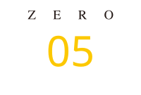
秘訣5 一人のお客様に向き合い、心を動かす言葉を書く
「うちの商品の良さを、どう伝えればいいのか」。まずは、目の前のお客様が何に困り、どうなりたいのかを考えます。商品の特徴を説明するだけでなく、その人にどう役立つかを伝えます。
商品の特徴を、あの人が選ぶ理由へ
エアコンが急に冷えなくなったら、修理会社のページで何を確かめますか。「今日、来てもらえる？」「修理代はいくら？」「知らない業者に頼んで大丈夫？」。会社の紹介より先に、知りたい答えがあるはずです。
ZEROにも、過去にエアコン業者様からお問い合わせをいただいたことがあります。ここではエアコン修理を題材に、依頼前の不安へ答える書き方を見てみましょう。以下の人物・心理・対応条件・コピーは、説明用の仮例です。
困っていること・望むこと・ためらう理由を具体化する
真夏にエアコンが冷えなくなり、修理会社を探している人。早く直してほしい一方で、「来てもらったら、高い料金でも断れなくなるのでは」と不安を感じているとします。
この人に「迅速・丁寧に対応します」と伝えても、訪問日時や料金は分かりません。書く前に確かめるのは、何に困り、どうなりたくて、何が不安でためらっているのか。顧客像を具体化したペルソナ、検索キーワード、問い合わせ内容を見返し、「早く直したいが、費用が分からず迷っている人へ」と、誰の何に答えるかを一文にします。実際に寄せられた声と、こちらの仮説も分けて扱います。
「親切・丁寧」を、実際の対応が分かる言葉に変える
作業前に修理内容と料金を説明し、同意を得てから作業する会社なら、その対応を具体的に書きます。「丁寧」の中身が見えると、お客様は何を確かめて依頼を決められるか、想像できます。
例えば、「作業前に修理内容と料金をご説明。ご納得いただいてから修理を始めます」と、実際の対応が伝わる言葉にします。
今日、来てもらえる？ 対応エリアと訪問日時の確認方法を伝える。
結局、いくらかかる？ 出張費・点検費・修理費と、追加費用が発生する条件を示す。
修理するか迷っている。 見積もり後に断れるか、その場合の費用まで説明する。
もちろん、書くのは実際に対応できることです。ZEROは、商品の特徴を読み手の疑問と結び付け、「この説明で判断できるか」まで考えて原稿をつくります。御社が大切にしている対応も、具体的に伝わって初めて選ぶ理由になります。
次の一文が読みたくなる、気持ちをつなぐ文章設計
必要な情報が書いてあっても、話が途切れると読み手の気持ちも止まります。一文を読んだ後、何が分かり、次に何を知りたくなるか。その順番を考えることで、読む理由が相談する理由へつながります。
冒頭で、自分に関係があることと読むメリットを伝える
例えば、「エアコンが冷えず、お困りではありませんか。修理を頼む前に知っておきたい、費用と依頼の流れをご案内します」。困っている状況と、この先で確かめられることを先に示します。会社の沿革よりも、今その人が探している答えから始めるのです。
費用と流れを案内すると約束したら、本文で具体的に答える。読む理由をつくり、その期待に応えるところまでが文章の役割です。
一文を読んで生まれる疑問に、次の説明で答える
「作業前に修理内容と料金をご説明します」。その次には、「金額を聞いてから、自分で決められる？」という疑問が生まれるかもしれません。実際にその対応をしている会社なら、「ご納得いただいてから修理を始めます」と続けます。さらに、見送る場合の費用まで分かれば、依頼を判断しやすくなります。
一つの答えから次の説明へ自然に読み進めてもらう、これが「滑り台効果」の考え方です。料金などの大切な情報は見つけやすく置き、読むほど理解が深まる文章にします。
実務では、原稿の横に「それならいくら？」「なぜそう言える？」「自分の場合は？」と読み手の疑問を書き込みます。答えのないところには説明を補い、同じ説明の繰り返しや判断に役立たない文章は削ります。
利用する意味と、相談した後の流れを伝える
エアコン修理の先には、暑くて寝苦しい部屋を、落ち着いて休める場所に戻したいという願いがあります。作業内容だけでなく、それが暮らしにどう役立つかまで伝えます。ただし、修理の可否や訪問日時など、確認前の約束はしません。
そのうえで「対応エリアと訪問可能日時を相談する」と、次にできることを具体化します。ボタン周辺には、連絡後の流れや費用が発生するタイミングも添える。何を相談でき、その後どう進むかが分かるところまで、言葉を整えます。
最後は自分の手で。届く言葉に魂を込める
文章の形が整っても、お客様の疑問が残っていれば依頼にはつながりません。私が担当者に求めるのは、「この一文を読んだら、あの人は何を思うだろう」と、最後まで考えることです。
初めて読むお客様の立場で、残る疑問を見つける
書き手には当たり前でも、初めて読む人には分からないことがあります。社内で通じる言葉や、省いてしまった条件はないか。初めて読むつもりで原稿を見返し、説明が足りない箇所は実際の対応を確認して補います。
「分かる・判断できる・誤解しない」で一文ずつ磨く
分かるか。専門用語や曖昧な表現を、初めて読む人にも伝わる言葉にできるか。
判断できるか。料金・条件・次の行動など、依頼に必要な情報がそろっているか。
誤解しないか。対応範囲を超えた約束や、条件を省いた表現になっていないか。
足りない説明を補い、重複を削る。長い一文は分け、声に出して不自然なところを直す。迷わせる言葉を減らすことも、読み手への配慮です。
下書きをそのまま完成にせず、担当者が伝わり方を確かめる
AIで下書きを作ることも、私が文章の土台を渡すこともあります。それでも、最後に編集する担当者が商材と顧客を理解し、読み直す工程は欠かせません。
相手の状況を想像し、疑問を見過ごさず、伝わるまで言葉を選び直す。私がいう「魂を込める」とは、この姿勢です。御社が積み重ねてきた工夫を、「よく分からない」で終わらせたくありません。必要としている人に届くよう、一文ずつ磨きます。
すべての制作プランで、ZEROが構成と原稿の初稿を作成します。最終編集は、デザイン・コーディングプランではお客様が、マーケティングプラン・ZERO式LP制作プランではZEROが担当します。仕様・価格・実績・数値などの事実は、すべてのプランでお客様にも最終確認をお願いします。
届けたい言葉が整ったら、今度はその価値が目に入る見せ方へ。最初の画面では写真・色・文字で興味を引き、漫画・イラスト・図解で商品や使い方を分かりやすく伝えます。
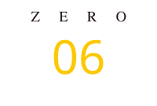
秘訣6 購買意欲を高める、伝わるデザインと演出
「読んでみたい」「なるほど、これなら自分に合いそう」。構成やコピーで整理した商品の魅力を、写真や色、文字でも伝えます。何を最初に見せ、何を画像で伝え、どこを詳しく読んでもらうかまで設計します。
ランディングページはファーストビューが命
商品のパッケージやお店の外観を見て、「なんとなく良さそう」と感じたことはありませんか。まだ使っていない商品を手に取りたくなる、まだ食べていないお店に入りたくなる。LPの最初の画面、ファーストビューにも、その役割があります。
例えば、東京の蕎麦店「なぜ蕎麦にラー油を入れるのか。」という看板。「蕎麦にラー油？ どんな味だろう」と気になり、料理の写真や店構えを見ると、味や雰囲気への期待が膨らみます。言葉で興味を生み、目に見える表現で魅力を具体化しているのです。
コピー・写真・色・文字で、同じ期待をつくる
出発点は、3C分析で整理したお客様の願い・不安と、自社が応えられる価値です。ビッグアイデアで決めた切り口を、写真・色・文字にも落とし込みます。仕事の場面を見せるのか、原料のこだわりか、使う自分の姿か。誰に、どんな価値を感じてほしいのかを決め、言葉とビジュアルをそろえます。
4つの制作事例から、価値に合う見せ方を読み解く
同じファーストビューでも、伝えたい価値によって選ぶ写真や配色は変わります。次の四つを見比べてみてください。
| 制作事例 | 価値に合う見せ方 |
|---|---|
| プロタクシー | 運転席の人物写真で働く場面を想像してもらい、収入や就職に関するコピーと数字で、転職後への期待を伝えています。 |
| ベジマカ | 原料を手にした人物と商品写真を組み合わせ、日本産の生マカという素材へのこだわりを具体的に見せています。 |
| HEAVEN Japan | 着用写真と補整を伝えるコピーで、用途と目指す見た目を示し、花や蝶の装飾でその印象を表現しています。 |
| SugarDaddy | 対象となる男女を言葉で示し、男女の写真、ピンクの布地風の背景や装飾で、出会いへの期待を表しています。 |
掲載画像は制作事例の抜粋です。画像内の数値・効果表現・利用条件は制作当時のものです。
「好きか」ではなく、「お客様に伝わるか」で選ぶ
ZEROでは、初めて訪れたお客様の立場で、次の三つを確かめます。
自分向けだと分かるか。検索・広告で期待した内容と、目に入る言葉や画像が合っているか。
選ぶ理由が伝わるか。何の商品・サービスで、自分にどんな価値があるかをつかめるか。
続きを確かめたくなるか。興味が生まれ、その疑問に続く本文が答えているか。
例えば「誰向けか分かりにくいので、対象者と利用場面を明確にする」と、伝わっていない点から修正を考えます。理由を共有すれば、修正の判断もそろえやすくなります。制作時の判断だけで成果が決まるわけではなく、公開後の反応も確かめることが必要です。
「なんとなく良さそう」を、偶然に任せない。商品の魅力と、続きを読む理由が伝わる入口をつくります。
漫画・イラスト・図解で、商品の魅力を見える形に
気になる商品でも、文字だけの説明が続くと読むのが大変です。気持ちに共感してもらう場面、利用方法を想像してもらう場面。それぞれに合った表現を選ぶことで、理解する負担を減らせます。
以下は、説明用に制作した架空の宅配クリーニングサービスの作例です。
漫画で、悩みへの共感と気持ちの変化を描く
「クリーニングに出したいけれど、お店へ持っていく時間がない」。そんな日常の困りごとから始めると、自分にもある悩みとして受け止めやすくなります。
この漫画は、時間がない女性が自宅集荷を知り、玄関で衣類を渡し、届いた衣類を手にして往復が不要なことを喜ぶ流れです。表情と会話で「それなら私も頼めそう」という気持ちの変化まで描けます。悩みへの共感から、商品・サービスを知ってもらう場面に向いています。
イラストで、自分が利用する場面を想像できるようにする
「自宅で集荷し、仕上がった衣類をお届けします」。その言葉だけでは、何をどうするのか思い浮かばない人もいます。そこで、利用する場面を具体的に見せます。
場所、行動、届く状態が見えると、自分の暮らしに取り入れる様子を想像できます。人物を描く目的は、お客様が言葉だけでは思い浮かべにくい部分を補うことです。
図解で、手順・仕組み・違いをひと目で伝える
次に気になるのは、申し込んでから何が起こるかです。全体の流れを番号と矢印で整理します。
1 申し込み → 2 自宅で集荷 → 3 クリーニング → 4 自宅にお届け。順番を矢印で示し、それぞれの内容をイラストで補えば、文章を一から読み解かなくても全体をつかめます。利用手順だけでなく、仕組みや商品の違いを整理する場面にも使えます。
料金や対象となる衣類など、詳しく確認したい条件は本文へ。図は関係や流れを見せることに集中させます。
伝える目的から表現を選び、実物写真も使い分ける
共感してほしいなら漫画、利用場面を見せるならイラスト、手順や違いを整理するなら図解。商品の質感や実際の仕上がりを判断してもらうには、実物写真を使います。イラストだけで品質を証明することはできません。
ここで何が伝われば、お客様は次へ進めるか。ZEROは構成と原稿からこの目的を定め、必要な表現を選びます。すべてのLPに全種類の画像をそろえる必要はありません。漫画・イラスト等の制作範囲と費用は、料金プランや個別のお見積もりでご確認いただけます。
流し読みでも伝わる、見出しと視覚的メリハリ
お客様は、最初から一字ずつ読むとは限りません。見出しで要点をつかみ、画像でイメージし、気になった説明を読む。その読み方でも、御社を選ぶ理由が伝わるようにページを整えます。
見出しだけでも、選ぶ理由と話の流れが分かるようにする
例えば、先ほどの架空の宅配クリーニングなら、「サービスの特徴」という見出しだけでは、何がうれしいのか分かりません。「お店への往復は不要。玄関で衣類を渡すだけ」と書けば、時間がない人にとっての価値が見えてきます。
その後に利用の流れや料金・対象衣類の見出しが続けば、詳しく確かめたい場所も探せます。まず見出しだけを追い、誰のどんな悩みに応え、どう利用できるかがつながっているか確認します。
文字・写真・強調・余白で、情報の優先順位をつくる
同じ大きさの文字や画像が続くと、どこが大事か迷います。各パートで最初に伝える要点を決め、見出し、主役になる画像、補足説明の順に見つけやすくします。伝えたい言葉を絞って強調し、話題の区切りに余白を取る。何を先に見てほしいかが、見た目からも分かるようにするのです。
宅配クリーニングなら、最初に「往復が不要」という価値、その近くに玄関で渡す場面を置き、申し込み後の説明へつなぎます。写真や装飾を増やす前に、コピーと画像が同じ内容を伝え、読む順番を助けているかを確かめます。
図で全体をつかみ、本文で根拠や条件を確認できるようにする
利用の流れは図でつかみ、具体的な料金や対象衣類は、その近くの本文で確認できるようにする。先ほどの架空のサービスなら、この役割分担で、流し読みする人にも詳しく検討する人にも必要な情報を届けられます。
大切な条件を小さく追いやるのではなく、判断する場所で見つけやすく示します。要点はひと目で、納得する理由は詳しく。ZEROは文章と画像を別々に仕上げるのではなく、どこで興味が生まれ、何を確かめれば申し込めるかという流れに合わせて配置を考えます。
御社の商品について、もっと知りたいと思ってもらえるか。その興味に、ページの続きで答えられるか。デザインも、問い合わせや購入につなぐための大切な設計です。
伝わる見せ方ができても、スマホで文字が読みにくい、表示が遅い、申し込み方が分からない状態では、その価値を届けきれません。次は、読みやすさ・表示速度・申し込み導線を整え、実際に使いやすいLPへ仕上げます。
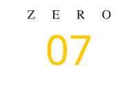
秘訣7 予約・相談・購入へつなぐ、LP構築とLINE活用
商品の魅力が伝わり、「相談してみたい」と思ってもらえた。画面が使いにくい、返事が来ない。そんな理由で、相談を諦めてほしくありません。LPを読むところから、質問・予約・購入を完了するところまで。お客様が次の一歩を踏み出しやすい仕組みを整えます。
スマホでもPCでも、読みやすく使いやすいLP構築
スマホで文字を拡大したり、表示されるのを待ったりしているうちに、読む気持ちが薄れたことはありませんか。考え抜いたコピーも、内容を読める状態で届いてこそ力を発揮します。
端末と読む場面に合わせて、配置・文字・ボタンを整える
スマホ対応は、PC画面をそのまま小さくすることではありません。秘訣6の四コマ漫画なら、PCでは横幅を使って2×2に、スマホでは読む順に縦へ並べます。同じ内容でも、視線が自然に進む配置は画面によって変わります。
本文は文字の大きさだけでなく、改行・行間・余白まで確認。ボタンは指で押しやすくし、「予約する」「相談内容を送る」など、その先でできることが分かる言葉にします。法人の担当者がPCでじっくり比較する商材なら、PC版も同じように作り込みます。
基準は、お客様がどの端末で、どんな場面で読むのか。拡大や読み直しを減らし、商品の価値に集中できる画面へ整えます。
画質を保ちながら、表示の遅さや操作のつまずきを減らす
画像を軽くしても、商品の細部や図の文字がつぶれては伝わりません。必要な画質を保ちながら容量と読み込み順を調整し、表示中に文章やボタンがずれないかも確かめます。
タップに反応するか、入力しやすいか、申し込み先へ迷わず移れるか。ZEROは、実際に読んで操作するところまで確認し、デザインを使いやすいページとして形にします。
LPで終わらせない、LINEでつなぐ相談・予約・再来店
「気になる。でも、予約の前に少し聞きたい」。そのお客様がLPを閉じた後も、相談を続けられる接点がLINEです。SNS・広告からLPへ、LPからLINEへ。興味を持ってもらった瞬間を、質問・予約・次の利用へつなぎます。
友だち追加で接点を持ち、予約前の疑問に答える
美容サロンなら、料金、施術内容、所要時間、持ち物。「自分でも受けられるか」「変更やキャンセルはどうするか」も、予約前に確かめたいことです。ZEROは、よく聞かれる質問をヒアリングし、お店が確認した情報をもとに回答を準備します。
基本の自動応答は、設定したキーワードや選択肢に対し、用意した回答を返す仕組みです。必要に応じて、確認済みの情報を参照するAI質問対応も個別に設計します。自動で答える範囲と、人が確認する場面を決め、判断が必要な相談は担当者へ引き継ぎます。
「何でも自動で返す」より、必要な答えが届き、大切な相談が人につながること。お客様の返信待ちを減らしながら、接客中に同じ説明を繰り返す負担を抑えます。
検討に合わせて、必要な情報を順番に届ける
友だち追加の直後に長い案内を一度に送っても、読み切れないことがあります。最初は利用の流れ、次に予約方法など、登録後に何をどの順番で届けるかを設計します。
すぐ予約する人にも、少し考えたい人にも、次に確かめることが分かるようにする。配信する内容とタイミングを決め、検討を続けてもらえる流れを用意します。
予約受付・カレンダー連携・来店前の案内をつなぐ
予約を自動化する前に、まず「どの条件なら受け付けられるか」を整理します。空いている時間があっても、担当者や設備が足りなければ予約は受けられません。
予約の仕組みを作る前に確認すること
| 確認する項目 | 決める内容 |
|---|---|
| メニューと所要時間 | サービスごとの時間、準備・片付けに必要な時間 |
| 受付できる件数 | 同時に対応できる人数、スタッフ・設備の条件 |
| 受付できる時間 | 営業時間、休憩、すでに入っている予定 |
| 変更・例外の対応 | 変更・キャンセルのルール、担当者が確認する場面 |
そのルールとGoogleカレンダーの予定をもとに、予約システムで空き枠を案内。お客様が選んだ日時を登録し、予約完了の通知や来店前のリマインドへつなぐ構成を作れます。
LINEの接点を、予約の受付までつなぐ
| 段階 | 仕組みと案内する内容 |
|---|---|
| 1．LINEに登録 | SNS・広告からLPへ案内し、友だち追加で接点を持つ。 |
| 2．自動返信・自動案内 | 自動応答設定・配信ツールで、事前に設定した回答を返信し、決めた順番で情報を配信する。 |
| 3．予約システムで受付 | 空き枠から日時を選択。Googleカレンダーと連携して予定を確認し、予約を自動登録する。 |
| 4．完了・来店前の案内 | 予約完了をLINEへ通知し、来店前に自動リマインドを送る。 |
来店型サービスの構築例。予約受付は、外部システムとカレンダー連携を組み合わせます。
LINE公式アカウントに、必要な配信ツール・予約システム・カレンダー連携を組み合わせて実現します。すでに予約システムをお使いの場合は、その仕様を確認し、活かせる方法と必要な開発を整理します。
来店後も接点を保ち、次の相談や利用につなげる
来店後の案内や次の相談も、LINEの接点を活かせます。相談内容や予約履歴を整理し、誰に、いつ、どんな案内をするかを決める。お客様の状況に合う連絡を続けられるよう、必要な管理と運用を一緒に考えます。
予約が増えたときにも、目の前のお客様に向き合える時間を持ってほしい。ZEROは、LPの集客と、その後の受付・案内を一つの流れとして設計します。
LINE自動応答、AI質問対応、予約・カレンダー・顧客管理の設定や連携構築は、LP制作とは別途のお見積もりです。必要な機能、対応言語、利用ツール、運用内容を確認し、構築費用と継続利用に必要な費用を契約前にご案内します。
フォーム・カートで、申し込みから完了まで迷わせない
相談内容をまとめて伝えたい方にはフォームを。購入を決めた方には使いやすいカートを。秘訣1で決めた目的に合わせ、ボタンの言葉と、その先でできることをそろえます。
初回対応に必要な情報を、無理なく受け取る
法人の相談なら、会社名・担当者名・連絡先・相談内容を中心に、初回対応に必要な項目を選びます。予算や時期も最初に必要かを考え、詳しい条件は後のヒアリングへ分けます。
何でも最初に聞くのではなく、相談する人の負担と、対応する側に必要な情報の両方を考える。入力例も添え、何を書けばよいか分かるフォームにします。
法人の相談を、次の打ち合わせへ
| 段階 | 内容 |
|---|---|
| 1．導入・見積もりを相談 | 業務の課題や依頼条件を確認する。 |
| 2．必要な情報を入力 | 会社名・担当者名・業務用メールアドレス・相談内容・希望条件を入力する。 |
| 3．受付と次の流れを確認 | 「お問い合わせを受け付けました」と表示し、担当者からの連絡方法を案内する。 |
法人向けフォームの説明用の例です。
入力中のエラーと、送信後の流れを分かりやすくする
入力に不備があれば、直す場所と内容を示す。送信後には、受け付けたことと、その後の連絡方法を案内する。「送れたのだろうか」と不安を残さず、次の打ち合わせへつなげます。
送料・配送・支払いを確かめ、購入を完了できるようにする
通販では、カートへ進んでから送料が分からない、同じ情報を何度も入力する、といったつまずきも確認します。送料・配送条件・支払い方法を確かめやすくし、入力から決済完了までの流れを整えます。
個人向けでも正確な条件を受け取るならフォームが役立ち、法人向けでも継続した相談にはLINEが合う場合があります。商材名だけで決めず、お客様の目的と検討段階から選びます。
既存のフォームや連絡先へのリンク設置は制作プランに含まれます。新規フォーム、カートの新設・改修、外部システムとの連携は、必要な作業を確認して対応範囲と費用をご案内します。
商品の魅力を伝えるだけでなく、申し込みを完了できるところまで用意する。次は、必要としているお客様に、このLPを見つけてもらう方法を考えます。
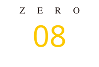
秘訣8 誰に何を伝えるか。集客とLPを一気通貫で設計
LPができても、必要としている人に見てもらえなければ、申し込みは生まれません。一方で、人数だけを集めても、期待と説明がずれていれば検討は進みません。誰に、どこで、何を伝え、どのページへ案内するか。ZEROは集客とLPをセットで考え、受注につながるか、広告費をかけても利益が残るかを判断します。
お客様の検討段階から、集客の入口と予算を決める
ここでは、布団を自宅から送って洗ってもらう「ふとん便（仮称）」を例に考えます。説明用の架空サービスです。料金・商品・利用条件を確かめ、申し込みへ進むページを「販売用LP」と呼びます。
すでに探している人には、選ぶための情報を届ける
「布団 宅配クリーニング 料金」と検索する人は、利用したいサービスが具体的になり、依頼先を探しています。このような方が「顕在層」です。検索広告や自然検索、AI検索から販売用LPへ案内し、料金・送料・返却までの日数など、選ぶための情報を示します。
まだ探していない人には、悩みと解決方法を知る入口を作る
「布団を洗いたい。でも、お店へ運ぶのが大変」。困っていても、宅配で頼めることを知らない人は、まだそのサービスを探していません。このような方が「潜在層」です。
SNSを楽しんでいるところへ、いきなり申し込みを求めるより、「持ち運ばずに洗う方法がある」と気づいてもらう。投稿や広告から、悩みと解決方法を伝える記事LP・動画LPへ案内し、自分に役立つと分かってから、販売用LPで条件を確かめてもらいます。
一度訪れた人には、もう一度確かめられる接点を用意する
記事LPや販売用LPを見たものの、申し込んでいない人もいます。こうした接点のある人へ広告を届け直すのが、リマーケティングです。料金や返却日数をもう一度確認できる入口を用意します。
ただし、一度訪れたからといって、全員が検討中とは限りません。配信に使えるデータや同意などの条件も確認します。また、検索から来た人でも基礎知識を知りたい場合があります。媒体だけで顧客の気持ちを決めつけず、知っていることと知りたいことに合わせる。同じ予約システムでも、飲食店と整骨院で困る場面が違うように、BtoBでも業種や状況を踏まえて入口を変えます。
必要な件数・予算・続けられる体制から、優先する施策を選ぶ
秘訣2の仮例では、初回来店者1人の売上LTVは54,800円。問い合わせの50％が来店すると仮定すると、問い合わせ1件の見込み売上は27,400円でした。
見込み売上から、広告費の目安を考える。
これは利益でも、広告に全額使える金額でもありません。提供・対応にかかる費用、固定費をまかなう分、残したい利益から、問い合わせ1件を獲得する広告費、CPAの目標を考えます。必要件数と予算の計算は秘訣2を土台にし、実際の契約率・費用・回収期間に合わせて見直します。
早く集客したい、継続発信の体制がないなら、広告を優先する選択もあります。計算上の見込みだけで予算を増やさず、実際の反応を確かめる。ZEROは商材・目標・社内の体制を伺い、どの施策から取り組むかをご提案します。
記事LPで、興味を商品の理解と検討につなげる
XやThreadsの短い投稿が気になり、リンク先の記事を読み進めたことはありませんか。投稿は読むきっかけ。記事LPは、悩みと商品がどうつながるのかを理解してもらう場所です。
短い投稿から記事へつなぎ、悩み・解決方法・商品の価値を伝える
例えば、予約対応の見直し方を講座にした作り手が、「予約電話で接客が止まる」という悩みを投稿する。記事では、何に困り、何を試し、なぜ講座にしたのかを伝えます。これは作り手が自分の講座を紹介する説明用の例です。
読み進めて「自分にも役立ちそう」と感じた人へ、講座内容・料金・受講条件を案内する。記事内で判断材料をそろえられるなら、そのまま申し込みへつなぐ方法もあります。
掲載先は自社サイトやnoteなどから選べます。noteは掲載先の名前で、記事LPはページの役割です。場所を決める前に、誰に何を理解してもらう記事かを考えます。
レビュー・体験や開発・比較や解説から、必要な切り口を選ぶ
レビュー：実際に使って分かった良さと、気になった点を伝える。
体験・開発：どんな悩みから何を試し、なぜ商品を作ったのかを伝える。
比較・解説：他の方法との違い、向く人・向かない人を整理する。
自作の教材や講座なら、作り手の経験も題材になります。ただし、本人の商品紹介と第三者のレビューは分けて伝えます。読ませるための話題を、商品を選ぶ理由までつなげる。ZEROは、LP制作で整理した顧客の悩み・競合との違い・自社の強みをもとに、記事の企画・構成・執筆まで対応します。講座・教材・情報商材や個人事業者の集客、既存LP・分析資料を活かした展開もご相談いただけます。
動画で、世界観・使用体験・物語から関心を育てる
動きや手順を見せると、言葉だけでは想像しにくかった価値が伝わることがあります。SNSなどで出会う入口が「動画広告」、動画を中心に理解・検討を深めるページが「動画LP」です。ZEROでは、ブランド表現と採算を踏まえ、主に次の3手法を検討します。以下のふとん便は、いずれも説明用の架空例です。
CM型で、世界観と商品の価値を端的に伝える
整った布団や利用場面を見せ、「布団のお手入れを、自宅から」と伝える。CM型は、企業の世界観や品質感を保ち、商品を正面から紹介する方法です。体験談や物語の表現を採用しにくい場合にも候補になります。
ブランド表現を大切にしたい企業なら、まずCM型で目標CPAと実際の獲得結果を比べる方法があります。まだ探していない人へ商品紹介だけで購入を促すのは難しい場合もあるため、新規獲得で採算が合わなければ、LPを見た人への再案内用としての活用も検討し、その結果を改めて確かめます。
レビュー・実演型で、使い方と利用する場面を見せる
届いた専用袋に布団を詰め、自宅で渡し、戻ってきた布団を確かめる。実演なら「こうやって使うんだ」「自分にもできそう」と、利用を具体的に想像してもらえます。レビューでは実際に確認した体験・感想を使い、広告や商品提供の関係も明確にします。
実演で見せる、利用の3つの場面
専用袋に布団を詰める
自宅で配送員へ渡す
返却後の仕上がりを確かめる
「ふとん便」を題材にした説明用の構成例です。実在のサービス・利用実績ではありません。
ストーリー型で、共感から解決方法への関心を育てる
布団を運べず困っていた主人公が、宅配という方法を知り、使ってみようと思うまでを漫画や動画で描く。「この続きが気になる」「自分にもある悩みだ」という気持ちから、サービスを検討するきっかけを作ります。広告であることを示したうえで、楽しみながら見進められる内容を考えます。
再生数だけでなく、LPへの訪問・申し込み・獲得単価で判断する
CM型から試し、反応に応じてレビュー・実演型、ストーリー型へ広げるのは、ZEROが考える進め方の一例です。すでに素材や配信結果があれば、それを踏まえて開始する手法を決めます。
役立つ内容や面白さから、視聴の継続や共有も狙います。ただし、最終的に確かめたいのは、商品の価値が伝わり、検討と申し込みへ進んだかどうか。動画と販売用LPで約束する価値をそろえ、訪問・申し込み・CPAまで見て、次に試す表現を決めます。
検索広告で、探しているお客様へ届ける
すでに商品やサービスを探している人へ、検索結果から見つけてもらう方法があります。リスティング広告のうち、検索に合わせて表示されるものが「検索連動型広告」です。
検索語句・広告での約束・LPの判断材料を一致させる
「エアコン修理 ○○市」と調べた人が知りたいのは、自宅へ来てもらえるか、どんな修理に対応するか、費用をどう確かめられるか。広告から、対応地域・訪問の流れ・料金の考え方が分かるLPへ案内します。以下は説明用の表示例です。
法人向け清掃の見積もりなら、対応施設・作業範囲・実績・見積もり方法。飲食店の予約システムなら、対応業務・費用・導入手順・利用条件。同じBtoBでも、検索する目的によって必要な答えは変わります。
検索の量・依頼につながる意図・費用で優先度を決める
優先する基準は、①実際に検索されているか、②その検索が依頼につながるか、③獲得費用が採算に合うか。検索が少ない商材や競争の強い分野では、別の入口も組み合わせます。
商談や社内検討が続くBtoBでは、クリックや問い合わせ件数に加え、有効な商談・受注まで確認します。ZEROは検索したこと、広告で伝えた約束、LPにある答えをそろえ、広告の企画とLPの説明を一緒に設計します。
SEO・AI検索で、疑問への答えを相談につなげる
お客様は商品名だけでなく、「どうすればよいか」「どちらが自分に合うか」という疑問からも調べ始めます。その疑問に答える情報が、まだ自社を知らない人との接点になります。
SEOは、検索エンジンが内容を理解しやすくし、必要な人に見つけてもらうための取り組み。コンテンツSEOでは、記事や事例を整えて集客につなげます。AIの回答で参照・紹介されることを意識した取り組みは、AIOとも呼ばれます。ここではサイトの技術面ではなく、顧客の疑問に答える情報設計を見ていきます。
基礎・比較、悩み、実例、地域・相談先の情報をそろえる
不動産買取を題材にした架空例なら、「相続した空き家、どうする？」に売却・活用の選択肢を説明する記事を用意します。自然検索や、AI回答の参照リンクから、詳しい内容を確かめてもらう入口です。
「買取と仲介の違い」という基礎・比較、「相続した空き家」という悩み、似た条件の実例、対応地域・相談先。検討に必要な情報をそろえ、関連記事へ進めるようにします。実際の事例と専門知識を使い、地名だけを入れ替えた記事を増やすことはしません。
関連記事で理解を深め、対応範囲や相談条件を確認できるLPへ案内する
記事で疑問に答えた後は、自社の対応内容・実績・相談条件を確かめられるLPへ。記事を増やすことより、理解が深まり、「この会社に相談したい」と判断できることを大切にします。導入条件や他の方法との違いを調べてから相談するBtoBでも同じです。
Googleは、AIによる概要やAIモードでもSEOの基本が有効であり、掲載のための特別な追加要件はないと説明しています。Googleの公式説明
検索上位やAIでの紹介・引用を約束するものではありません。
ZEROは顧客の疑問を記事の企画へ落とし、執筆・更新とLPへの案内を設計します。取材や継続更新には時間と費用がかかるため、早く集客したい場合は広告と並行し、見つけてもらう入口を育てます。
SNS・ディスプレイ広告・再訪広告で接点を広げる
検索されるのを待つだけでなく、役立つ情報や利用場面を届け、知ってもらう方法もあります。自社のお客様と、どこでどんな接点を持てるかを考えます。
SNS運用で接点と信頼を育て、SNS広告で届ける機会を広げる
SNS運用は、実践のコツや利用場面を継続して発信し、知ってもらう機会と信頼を育てる方法です。興味を持った人を、記事LP・動画LP・販売用LPへ案内します。続ける時間と担当体制も、選ぶ基準になります。
SNS広告は、配信対象を設定し、費用をかけて新しい接点を作る方法です。投稿を育てながら広告で広げる選択もあります。まだサービスを探していない人には、記事や動画で利用する意味を伝えてから、販売用LPへつなぎます。
X・Threadsで生まれた興味を、記事での理解につなげる
講座・教材、個人向けサービス、個人事業主への支援などでは、短い言葉で悩みや考え方を伝え、記事LPで実践内容や選び方を詳しく説明する流れが候補になります。興味を持った人が、自分のペースで続きを読める入口です。
Instagram・Facebookで、利用場面や業務の課題を伝える
Instagramでは美容・食品・店舗サービスの利用場面、Facebookでは企業・店舗向けの課題や事例などを切り口に考えます。飲食店の予約管理、整骨院の業務支援といった店舗向けBtoBも候補です。
ただし、店舗アカウントがあるだけで経営者へ確実に届くわけではありません。配信設定に加え、広告とLPで対象業種・困る場面・導入条件を明確にします。
TikTok・YouTubeで、実演・使い方・比較を見せる
TikTokなら美容・日用品・食品などの短い実演、YouTubeなら使い方・比較・導入説明などが候補になります。詳しい説明が必要なら動画LPへ、十分に理解できていれば販売用LPへ案内します。
これは媒体選びの基本例です。Xで動画を使うことも、Instagramから記事へ案内することもあります。TikTokを若年層だけと決めつけることもせず、お客様との接点と実際の反応で調整します。
商材ごとの配信条件も確認が必要です。例えばTikTokの日本向けポリシーでは、サプリメントが禁止対象の例に含まれています。TikTok公式ポリシー
健康食品などは商品と表現を確認し、制作前に配信可否を判断します。
サイトやアプリの広告枠から、新しいお客様との接点を作る
ディスプレイ広告は、ウェブサイトやアプリの広告枠に画像・動画などを表示する方法です。例えば予約対応に悩む店舗オーナーへ、その課題を入口にした広告を届け、記事LP・動画LPで解決方法を伝えます。Google・Yahoo!の広告も、BtoB・BtoC双方で候補になります。
一度接点を持った人へ、選ぶための情報を届け直す
リマーケティング、またはリターゲティングは、媒体名ではなく、配信相手の選び方です。一度LPを見た人へ条件や事例を再案内し、購入・相談を検討する機会を作ります。社内相談のあるBtoB、一度では決めにくいBtoCの両方で検討できます。
使えるデータや同意の条件、配信できる人数を確認し、訪問者が少なければ新しい接点を増やす施策も組み合わせます。
集客方法を増やすことが目的ではありません。自社のお客様に届き、検討が進む組み合わせを選ぶことが目的です。ZEROは、記事・動画制作、検索・SNS・ディスプレイ・再訪広告の企画運用、SEO・AI検索を意識した記事の企画・執筆・更新、SNSの制作・運用までご相談いただけます。
これらはLP制作とは別途のお見積もりです。LPで整理した顧客理解と訴求を共通の土台に、商材・予算・社内体制に合わせて必要な施策を選び、対応媒体・制作量・運用内容・広告媒体費を含む費用を契約前に明確にします。
お客様の状態に合わせて入口を作り、広告・記事・動画・LPで伝える価値をそろえる。そこまで整えたら、実際にどんな反応があったかを確かめます。次は、公開後の行動と数字からLPを磨く方法です。
秘訣9 制作してからが本当の勝負。A/BテストでLPを磨く
制作中によいと思った言葉が、初めて見るお客様にも同じように伝わるとは限りません。どの魅力に興味を持ち、どこで迷い、何が申し込みを後押ししたのか。公開後は、スクロールやボタンのクリック、申し込みの状況を確認します。調査で立てた仮説を確かめ、構成・文章・デザインを、お客様の反応で磨いていきます。
A/Bテストで、伝わる訴求とデザインを見つける
同じ時期に案を振り分け、申し込みにつながる反応を比較する
A/Bテストは、異なるコピーやデザインの案を同じ時期に見てもらい、反応を比べる方法です。アクセスをランダムに振り分け、2案なら約半分ずつ、3案なら約3分の1ずつ表示します。
例えば、架空の布団宅配クリーニング「ふとん便」。A案は「重たい布団を運ばずに。自宅からクリーニング」、B案は「自宅では洗えない布団を、すっきり清潔に」。同じサービスでも、便利さと清潔さのどちらを先に伝えるかで、受け取る魅力が変わります。
申し込み完了率の計算例（説明用の仮の数値）
| 案 | LPを見た人数 | 申し込み完了数 | 完了率 |
|---|---|---|---|
| A案 便利さ | 1,000人 | 30件 | 3％ |
| B案 清潔さ | 1,000人 | 50件 | 5％ |
この計算例では、1人が1回申し込みを完了したものとして計算しています。
この仮例ではB案の完了率が高くなります。ただし、1,000人は計算を説明するための人数で、必要な人数やテストの終了条件ではありません。実績や効果を示す数値でもありません。
一箇所ずつ変え、コピー・画像・ボタン・フォームの改善を確かめる
何が変化につながったかを確かめたいなら、変更箇所を絞ります。メインコピーを比べるときは、写真・本文・料金・ボタン・配置をそろえる。写真を変えるなら、言葉やほかの条件はそろえて2〜3案を比べます。
申し込みボタンやフォームも同じです。「どこを、何のために変えるか」という仮説を一つ決める。既存LPを活かせるため、全体を作り直すより制作費を抑えながら、段階的に改善を進められます。
訴求の異なるLPを比べ、伝える価値と説明順の方向性を探る
予算とアクセス数が見込めるなら、中心に置く価値から変えたLPを比較する方法もあります。3C分析・ペルソナ・ビッグアイデアをもとに、例えば次の3方向を用意します。
3案を横にスワイプして、LP全体の構成を比較できます。
| 案 | 最初に伝える言葉と価値 | 続けて伝える内容・順序 |
|---|---|---|
| A案 便利さ | 「重たい布団を運ばずに。自宅からクリーニング」。持ち運ぶ手間を減らし、自宅で完結する便利さ。 | 「かさばる布団も、玄関先で。お店へ運ぶ手間をかけずに。ご自宅から、布団のお手入れ」。専用袋を届け、自宅で集荷し、洗浄・乾燥後も自宅へ届ける。利用の流れ → お手入れ → 料金・条件の順に見せる。 |
| B案 清潔さ | 「自宅では洗えない布団を、すっきり清潔に」。家では洗いにくい布団の洗浄と仕上がり。 | 「家では洗いにくい布団を、すっきり。毎日使う布団だから、洗浄・乾燥まで、まとめてお任せ」。洗濯表示と素材を確認し、仕上がりを確かめて自宅へ届ける。お手入れ → 利用の流れ → 料金・条件の順に見せる。 |
| C案 家族での利用 | 「家族の布団をまとめて。心地よい毎日へ」。夫婦や子どもの布団を一緒に利用する場面。 | 「家族の布団を、一緒に。ご夫婦の布団も、子どもの布団も。衣替えの時期に、まとめてお手入れ」。素材に合わせて洗浄・乾燥し、仕上がりを確認して自宅へ届ける。お手入れ → 利用の流れ → 料金・条件の順に見せる。 |
各案で使う利用手順とお手入れの内容も共通です。
| 共通の説明 | 掲載する内容 |
|---|---|
| ご利用の流れ | 1．ネットで予約：布団の枚数と集荷日を選ぶ → 2．自宅から発送：専用の袋に詰めて渡す → 3．自宅で受け取る：洗浄・乾燥後にお届け。 |
| 布団に合ったお手入れ | 1．素材を確認：洗濯表示と素材を確認 → 2．洗浄・乾燥：素材に合わせて洗浄・乾燥 → 3．仕上げ確認：仕上がりを見てからお届け。 |
ふとん便（仮称）／説明用の架空サービス・デザイン例
この架空例は、布団2枚12,800円（税込）、往復配送・洗浄・乾燥込み、専用袋を自宅へ配送、返送目安約2週間という共通条件です。羽毛布団は洗濯表示・素材を確認して対応可否を案内し、一部地域は対象外としています。申し込みボタンは「集荷を申し込む」と案内しています。実在の商品・販売条件ではありません。
商品・価格・申し込み条件をそろえ、コピー・写真の見せ方・説明順を変える。ここで比べるのは、ページ全体としての伝え方です。有望な方向性を絞ったら、その案を軸に細部を磨きます。「どの価値を伝えるか」と「一箇所をどう変えるか」。目的に合う比較方法を選びます。
制作料金に含むテスト用FVは、マーケティングプランで計2パターン、ZERO式LP制作プランで計4パターンです。いずれも選定した共通デザインのコピー違いで、LP全体を変える比較案の追加制作や、A/Bテストの設定・運用は別途となります。
予算・期間・アクセス数から、検証計画を立てる
案を作っても、見る人が少なければ違いを確かめにくくなります。自然にアクセスが集まるのを待つだけでなく、広告も使って検証に必要なアクセスを集めます。
各案に集めるアクセスと、必要な広告予算を計画する
何案を比べ、各案にどのくらいアクセスを集めるか。ZEROは商材・予算・見込めるアクセスに合わせて、検証計画をご提案します。案を増やせば、1案あたりに集まるアクセスや制作費も変わるため、試す数から一緒に考えます。
区切りに達しても差が明確でなければ、継続や次の改善を検討する
基本は1ヶ月を一区切りとし、案件によっては事前に決めたクリック数を区切りにします。「1案あたり1,000クリック」は、集客計画を立てる目安の一例です。先ほどの「LPを見た1,000人」という計算例とは意味が異なり、一律に必要な数や、必ず結論が出る条件ではありません。
この1ヶ月は、結果を確認する区切りです。広告運用・改善サービスの契約期間は、料金表に記載のとおり3ヶ月からとなります。
区切りに達したからといって、無理に勝敗を決めません。差がはっきりしなければ、検証の継続や次に試す改善を提案します。案ごとの申し込みに加え、ページ内の読まれ方も確認し、次に確かめることを絞ります。
比較案の追加制作、計測設定、広告運用、継続した検証・改善は、ご依頼内容に合わせて範囲と費用を整理します。制作段階のデザイン案と、公開後の運用契約・追加制作費・広告媒体費・ツール費を分け、事前にご案内します。
離脱・CVR・CPAから、次の改善点を見つける
スクロール・クリックと実際のページから、つまずく理由の仮説を立てる
どの説明まで読まれ、どのあたりで読み進める人が減ったのか。スクロールやクリックの状況を見ながら、その箇所と直前の文章を読み直します。長すぎないか、一読で意味が分かるか、前の話から自然につながるか。
数字は、見直す候補を教えてくれます。ただし、離脱した位置だけでは理由を断定できません。実際の文章や図と照らし合わせ、「ここが伝わりにくいのではないか」という仮説を立てます。
説明を直し、読み進めやすくなったかを確かめる
ふとん便の利用手順は、予約・発送・受け取りの3段階でした。しかし、「袋は自分で用意するのか」「どこかへ持ち込むのか」という疑問が残っているかもしれません。
そこで、「袋に詰める」と「配送員に渡す」を分け、4段階で具体的に案内します。
| 変更前：3ステップ | 変更後：4ステップ |
|---|---|
| 1．ネットで予約：布団の枚数と集荷日を選ぶ。 | 1．ネットで申し込む：布団の枚数と集荷希望日を選ぶ。 |
| 2．自宅から発送：専用の袋に詰めて渡す。 | 2．届いた専用袋に、布団を詰める。袋は自宅へ届けられる。 |
| 3．自宅で受け取る：洗浄・乾燥後にお届け。 | 3．自宅で配送員に渡す。お店への持ち込みは不要。 |
| 4．洗浄・乾燥後、自宅で受け取る。返送目安は約2週間。 |
確認するのは、利用の流れの前後で読む手が止まっていないか、前後の文章やボタンのクリックにも気になる点がないかです。離脱した位置だけで原因は断定しません。
何を準備し、どこで渡し、いつ頃戻るのか。申し込み後の動きを写真と短い説明で伝え、変更後の反応をもう一度確かめます。
ふとん便（仮称）／説明用の架空サービス・デザイン例
これは説明用の改善仮説で、実測結果や効果を示す事例ではありません。段階を増やすこと自体が目的ではなく、申し込み後の動きを具体的に伝えるための修正です。変更後は、次の説明への到達率や、ボタンを押した人数・割合をもう一度確かめます。
ボタンのクリックと申し込み完了を分け、CVR・CPAを確認する
読む人やボタンを押す人が増えても、入力途中でやめているかもしれません。その先の問い合わせ・予約・購入が、実際に完了したかを確認します。
申し込みへの効果を確かめる2つの数字
| 指標 | 計算と確認すること |
|---|---|
| 申し込み完了率（CVR） | 申し込みを完了した人数÷LPを訪問した人数×100。訪問者のうち、何％が目的の行動を完了したか。 |
| 獲得単価（CPA） | 広告費÷その広告からの申し込み完了件数。1件の申し込みに広告費がいくらかかったか。 |
比較する期間・対象流入・計測方法をそろえ、変更前後を見ます。訪問した人数、訪問回数、広告クリック数は別の数値です。秘訣2の許容CPCには、広告クリックから問い合わせ完了に至る割合を使います。
問い合わせ型では、CPAの分母を広告からの全問い合わせ完了件数にそろえ、有効な問い合わせや契約だけの獲得単価と分けます。その後の商談・契約まで確認し、秘訣2で考えた事業の採算につなげます。
変更と結果を記録し、次の修正や構成の見直しへつなげる
今回変えたこと、得られた反応、まだ分からないこと、次に確かめることを記録します。良かった案のコピー・画像・構成・ボタンを軸に改善し、複数案の良い部分を組み合わせる場合も、組み合わせたLPで再び確かめます。
部分修正で改善しにくい場合は、伝える価値や構成へ戻り、必要ならリニューアルも検討します。比較する、見直す、修正する、もう一度確かめる。ZEROはこの積み重ねを、次のLPや別の業界・海外市場を考える手掛かりにもしていきます。
目的と数字から考え、お客様を調べ、伝える順序・言葉・デザインを作り、集客と受付へつなぎ、反応で磨く。ここまでを一つの流れとして考えるのが、ZEROのLP制作です。自社なら何から整えるべきか、どこまで任せたいか。料金とご提案の流れを確認し、まずは現在の課題をお聞かせください。